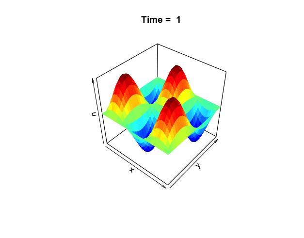
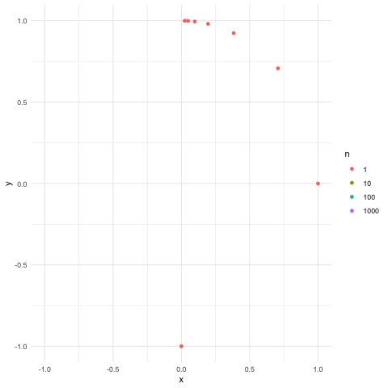
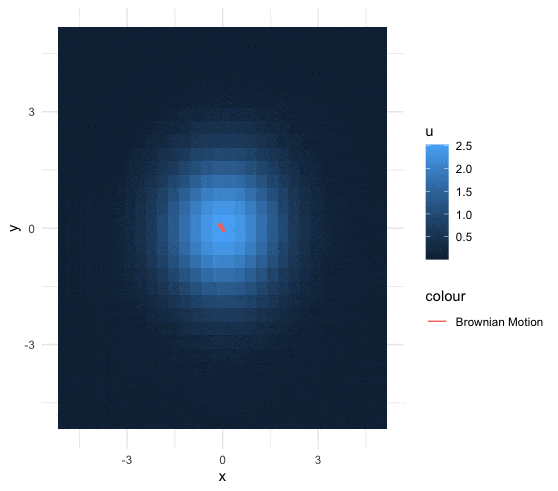
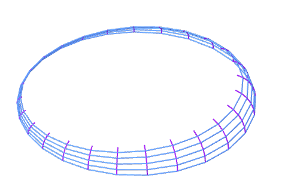
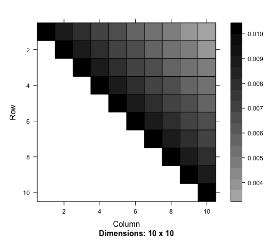
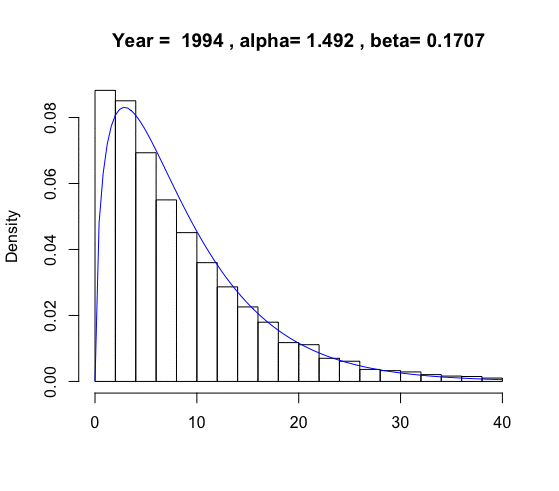
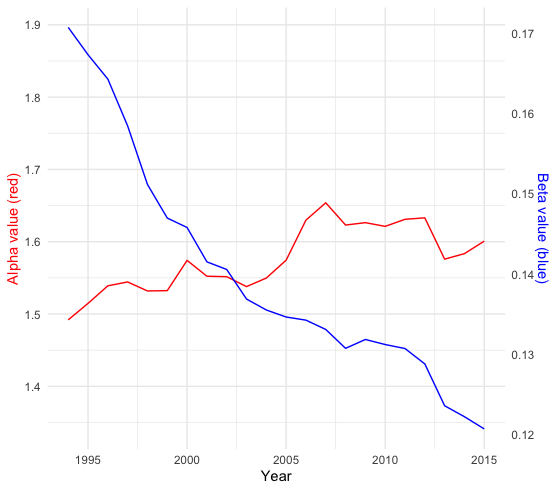
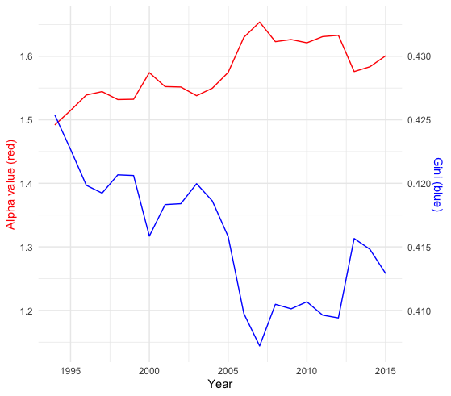
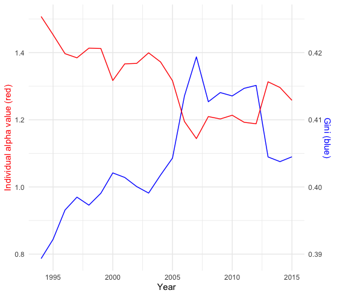

18 Harmonic Analysis
In science, when one experimenting on the particles suspended in the fluid, one has the control to ensure that the trajectories of the particle movements are independent of human factors. In social experiments, the “particles” are, in some sense, ourselves. These “particles” have internal states such as emotion and intelligence. These extra features endow “experimentees” with (perhaps simple) interactional and distributional anti-control capabilities. They can store energy and information, sense their environment, and respond to it. They can change or update their internal states contingently depending on their interactions with each other. In this sense, a simultaneous relationship between the “experimenters” and the “experimentees” naturally can emerge in any social “experiment.”
Let’s think of a social “experiment” as a simultaneous or a structural coupling model. Unlike the causal model that is a collection of premises from which one can deduce a set of propositions along with the order of the causal chain, a simultaneous model is a collection of synchronic equivalence relations from which one merely can deduce the invariants under some appropriate transformations.565 The transformation is often presented by group actions. However, to maintain the invariance under the transformations, the (seemingly disordered) simultaneous model should accompany some ordering parameters that are formed by the “experimentees” and are accepted by the “experimenters” or vice versa. The ordering parameters synchronize the microscopic and the macroscopic behaviors of the experiment. They generate the simple principles which the “particles” would like to follow, and they influence the direction in which the paths of the experiment evolve.
The ordering parameters may depend only on a few principal components. One typical ordering parameter is the time arrow, i.e., the time parameter in a one-parameter semigroup. The time attaches the dynamical law to all components in the system. Meanwhile, the interactions of the components follow some invariant operations. The spectral representation of the dynamics gives us another vision about the ordering: the order of eigenvalues or singular values.566 For example, when the embedding data manifold is a square matrix (circular data manifold), the first eigenvector of the manifold tends to describe the full trend of the series. So projecting the data onto the first eigenvector produces the summation. The following principal order bases, i.e., the 2nd or the 3rd, tend to capture the “low-frequency” components of the data, and the rest basis functions progressively fill in “high-frequency” details.
Other important forms of ordering parameters are the non-negative linear functional, such as the energy, the utility, and (probability) distribution functions.567 For example, heat is a form of energy produced by the particles’ disordered motion (kinetic energy). Heat can convert to and from different forms of energy. The distribution function from the heat equation relates to the Gaussian probability function, which we will see in ch[?]. In practice, man-made indexes, such as wealth or income, tend to play the role of the one-dimensional “ordering” parameter. The simultaneity shaped by this parameter can give rise to specific capitalist social-economic dynamical patterns that bring in inequality and the growth of the society.
All these ordering structures more or less relate to the profound properties of the complex exponential functions and the abstract Fourier basis. The studies of symmetry (and skew-symmetry), invariants, and group transformations of these functions are in a field called harmonic analysis.568 The strength of the harmonic analysis is that the abstract Fourier basis produces an ordered and meaningful summarization of the underlying model or data since the Fourier transformation extracts regularities from model or data by projecting them into invariant subspaces and orders the basis functions in terms of their smoothness.
Eigen-decomposition of the circular data manifold
18.1 Miscellaneous: Harmonic Function, Heat Equation, Exponential Family
For an analytic function \(f(z)=u(x,y)+\mbox{i}v(x,y)\), we have seen how to connect the real and imaginary parts of the function through the Cauchy-Riemann relations. Now suppose we are only interested in the real parts of the complex function \(f(z)\), namely \(u(x,y)\). YYou may wonder what would be the analytic revelation accompanying this real-valued function \(u(x,y)\).
The revelation comes with an operation of the second-order partial derivatives. Suppose \(f\) satisfies the Cauchy-Riemann relations so that \(f\) is analytic and has continuous partial derivatives. Differentiating both sides of one Cauchy-Riemann equation \(\frac{\partial u}{\partial x}=\frac{\partial v}{\partial y}\) with respect to \(x\) and differentiating both sides of the other Cauchy-Riemann equation \(\frac{\partial u}{\partial y}=-\frac{\partial v}{\partial x}\) with respect to \(y\), we have \[\frac{\partial^{2}u}{\partial x^{2}}=\frac{\partial^{2}v}{\partial x\partial y},\quad\frac{\partial^{2}u}{\partial y^{2}}=-\frac{\partial^{2}v}{\partial y\partial x}.\] By adding the two equations, we obtain an equation of the second-order partial derivatives of \(u(x,y)\): \[\frac{\partial^{2}u}{\partial x^{2}}+\frac{\partial^{2}u}{\partial y^{2}}=\Delta u(x,y)=0,\] where \(\Delta\) represents the operator that sums up all the second-order partial derivatives and is called the Laplacian operator. The real-valued function \(u(x,y)\) is said to be harmonic if \(\Delta u(x,y)=0\). In other words, for an analytic function \(f(z)=u(x,y)+\mbox{i}v(x,y)\), the real part of the analytic function should be harmonic.570 In a similar manner, we can attain \[\frac{\partial^{2}u}{\partial y\partial x}=\frac{\partial^{2}v}{\partial y^{2}},\\ \frac{\partial^{2}u}{\partial x\partial u}=-\frac{\partial^{2}v}{\partial x^{2}},\] namely \(\Delta v(x,y)=0\). So the imaginary part of the analytic function is also a harmonic function. The function \(v(x,y)\) is called a harmonic conjugate of \(u(x,y)\). Two harmonic functions are said to be harmonic conjugate if they satisfy the Cauchy-Riemann relations.
Notice that the one-dimensional Laplacian operator is nothing else but a second-order differentiation \(\Delta f(x)=\mbox{d}^2 f(x)/\mbox{d} x^2\). We have seen in chapter 14.2 that the eigenfunctions of this Laplacian \(\Delta\) are the trigonometric functions \(\sin(\theta x)\) and \(\cos(\theta x)\) where \((\pm\theta)^2 =\lambda\) are the eigenvalues of \(\Delta\). Discretizing the \(\lambda\) by some integers from \(\mathbb{Z}\), i.e., \(\lambda=k^2\) for \(k\in\mathbb{Z}\), we formed the Fourier basis functions, i.e., \(\phi_k(x) = \mbox{e}^{\mbox{i}kx}\). Thus, if we have a harmonic function, we expect the function to associate with some nice base systems like the Fourier bases.
 Figure 18.1: Distribution of the heat
Figure 18.1: Distribution of the heat
On the other hand, we can think that a harmonic function is (at least locally) a part of an analytic function.Suppose we have a nice base system induced by the harmonic function on \(\mathbb{R}^n\). In that case, the system can be extended to an analytic complex system in \(\mathbb{C}^{n}\) where the complexified system becomes infinite differentiable, , and some complex polynomials can represent the derivative operations of the new system.
Using the harmonic condition to derive some invariant representations and linking some complex phenomena to simple harmonic bases, these two paths somehow point to the big picture of the harmonic analysis.
Code for generating heat distributions
One way to understand harmonicity and invariance is to consider the equilibrium state in heat diffusion problems. In chapter 8.5, we considered the heat equation in one dimension. Now we extend the problem to two dimensions. The following two-dimensional heat equation describes the dynamics in figure 18.1: \[\frac{\partial f(x,y,t)}{\partial t}=-c_{D}\left(\frac{\partial^{2}f}{\partial x^{2}}+\frac{\partial^{2}f}{\partial y^{2}}\right)=-c_{D}\Delta f(x,y,t).\] The harmonic equation \(\Delta f(x,y,t)=0\) can be thought of as the steady-state or equilibrium solution when there is no heat diffusing in the system, namely \(\partial f(x,y,t)/\partial t =0\). The Laplacian operator only counts for the changes regarding the spatial variables \((x,y)\), excluding the time variable \(t\).
To make things more transparent, let’s separate \(f\) into two parts, \(f(x,y,t)=K(x,y)u(t)\), where \(K(\cdot,\cdot)\) is a function capturing the spatial interaction effect between \(x\) and \(y\), and \(u(t)\) is the function capturing the dynamical effect. The 2D heat equation becomes \[K(x,y)\frac{\mbox{d}u(t)}{\mbox{d}t}=-c_{D}u(t)\Delta K(x,y).\] Rearrange the expression and assume an unknown constant \(c\) for ratios \[\frac{\mbox{d}u(t)}{\mbox{d}t}\frac{1}{u(t)}=-c_{D}\frac{\Delta K(x,y)}{K(x,y)}=c.\] We arrive in two separate systems. The interaction system forms an eigenvalue problem \(\Delta K=\lambda K\) where \(\lambda=-c/c_{D}\), and \(K(\cdot,\cdot)\) relates to a kind of the multivariate eigenfunction of the Laplacian operator \(\Delta\). After solving the eigenvalue \(\lambda\), the value of \(c\) becomes available, and so does the solution of the dynamical system \(\mbox{d}u(t)/\mbox{d}t=c\).
 Figure 18.2: Reproduce the 1-rank heat matrix
Figure 18.2: Reproduce the 1-rank heat matrix
The Laplacian operator can be rewritten as571 Because the gradient operators are linear, the inner product of the two gradient operators is still linear. So Laplacian operator is also a linear operator. \[\begin{align*}\Delta K &=\frac{\partial^{2}K}{\partial x^{2}}+\frac{\partial^{2}K}{\partial y^{2}}\\ &=\underset{\nabla^{\mbox{H}}}{\underbrace{\left(\frac{\partial}{\partial x}-\mbox{i}\frac{\partial}{\partial y}\right)}}\underset{\nabla K}{\underbrace{\left(\frac{\partial K}{\partial x}+\mbox{i}\frac{\partial K}{\partial y}\right)}}= \nabla^{\mbox{H}}\nabla K. \end{align*}\] Let \(\phi\) and \(\psi\) be the eigenfunctions of the gradient operator \(\nabla\) and the adjoint operator \(\nabla^{\mbox{H}}\), respectively. These functions should share the same eigenvalues.572 Recall that the left-hand eigenvector and the right-hand eigenvector, though probably different, must share the same eigenvalues. So we can decompose \(K\) by \(\nabla^{\mbox{H}}\nabla K=\lambda K=\lambda\phi\psi\) where \(\nabla\phi=\sqrt{\lambda}\phi\) and \(\nabla^{\mbox{H}}\psi=\sqrt{\lambda}\psi\).
The above decomposition tells that two 1D orthonormal bases can represent the 2D spatial variation in \(K(\cdot,\cdot)\). We illustrate this decomposition using the data generated by a 2D heat equation. Suppose we have two series of \(x\) and \(y\), such that \(\mathbf{x},\mathbf{y}\in\mathbb{R}^{N}\). Now the realizations of \(K(\cdot,\cdot)\) are recorded in a matrix \[\mathbf{K}=\left[\begin{array}{ccc} K(x_{1},y_{1}) & \cdots & K(x_{1},y_{N})\\ \vdots & \ddots & \vdots\\ K(x_{N},y_{1}) & \cdots & K(x_{n},y_{N}) \end{array}\right].\] By the singular value decomposition, we can decompose \(\mathbf{K}\) as \[\mathbf{K} = \mathbf{U}\mathbf{\Sigma}\mathbf{V}^{\top} =\underset{\Phi}{\underbrace{\left(\mathbf{U}\sqrt{\mathbf{\Sigma}}\right)}}\underset{\Psi^{\top}}{\underbrace{(\mathbf{V}\sqrt{\mathbf{\Sigma}})^{\top}}}=\Phi \Psi^{\top}.\] Note that \([\mathbf{K}^{\top}\mathbf{K}]_{ij}=\sum_{k=1}^{N}K(y_{i},x_{k})K(x_{k},y_{j})\) and \([\mathbf{K}\mathbf{K}^{\top}]_{ij}=\sum_{k=1}^{N}K(x_{i},y_{k})K(y_{k},x_{j})\). Thus the matrix \(\mathbf{U}\), as the eigenvector matrix of \(\mathbf{K}\mathbf{K}^{\top}\), is the basis contributed by the input \(\mathbf{x}\), and \(\mathbf{V}\), as the eigenvector matrix \(\mathbf{V}\) of \(\mathbf{K}^{\top}\mathbf{K}\), is the basis contributed by the input \(\mathbf{y}\).573 The matrix \(\mathbf{K}\) is extremely singular, i.e. a rank-\(1\) matrix \(\mbox{rank}(\mathbf{K})=1\). There is a compact representation for \(\mathbf{K}\) such that \[\mathbf{K} =\Phi \Psi^{\top} = \sigma_1\phi_1(\mathbf{x}) \psi_1^{\top}(\mathbf{y})\] where \(\phi_1(\mathbf{x})\) and \(\psi_1(\mathbf{y})\) are the leading eigenvectors in \(\Phi\) and \(\Psi\) respectively, and \(\sigma_1\) is the leading singular value. In this case, the function \(K(x,y)\) can be thought of as the “outer-product” of two basis functions \(\phi(x)\) and \(\psi(y)\) that respectively span the spaces of \(x\) and \(y\). See figure 18.2. The “outer product” can be formally defined as a tensor product which we will discuss in ch[?].
Reproduction
So far, things go well on two dimensions. But we have to keep in mind that we assume that the 2D heat equation is separable as \(f(x,y,t)=K(x,y)u(t)\). If we drop this assumption, we should think about parameterizing \(K(x,y)\) with the time parameter \(t\), namely a time-varying 2-dimensional “multivariate eigenfunction.”574 Another way is to consider a 3-dimensional “multivariate eigenfunction,” i.e., \(K(x,y,t)\). The way is analogous to construct a triple “product” of three basis functions. However, according to some spatial-temporal philosophical doctrine, the “product” seems to blend two different basic matters, time and space. Also, the triple “product” is not computationally attractive as it faces the curse of dimensionality. Unlike the spatial structure, the long memory encoded in the time \(t\) is hardly decomposable. The rank-\(1\) example in figure 18.2 only uses two eigenvectors, namely \(2\times 100\), to reproduce the \(100\times 100\) \(\mathbf{K}\) matrix. But if we extend the matrix \(\mathbf{K}\) to a short time period of \(100\) time points, we may probably need to store a large portion of the \(200\times 100\) data points rather than three eigenvectors, namely \(3\times 100\) data points.
Here is some intuition about our planned tour of the parameterization. Let’s assume that \(\mathbf{A}\) is a linear operator where the following differential problem \[\frac{\partial K}{\partial t}=\mathbf{A}K,\quad K(x,y,0)=f(x,y,0)\] admits a solution form \(K(x,y,t)=(\mbox{e}^{t\mathbf{A}})f(x,y,0)\).575 The solution form \((\mbox{e}^{t\mathbf{A}})f(x,y,0)\) can reversely define the meaning of operator \(\mathbf{A}\) by the following limit: \[\lim_{t\rightarrow0}\frac{e^{\mathbf{A}t}f-f}{t}=\mathbf{A}f.\] In this case, we call \(\mathbf{A}\) the generator of \(K(x,y,t)=(e^{t\mathbf{A}})f(x,y,0)\). Suppose that we replace the notation \(\mathbf{A}\) with the Laplacian operator \(\Delta\), and suppose the above statement still holds, then we would obtain a parameterized solution.
The above idea of parameterization is rooting in the applications of abstract exponential objects, such as \(\mbox{e}^{t\Delta}\). To grab the meanings of these abstract exponential objects, we need some knowledge about the binary operation and the group structure.576 Recall that the addition and multiplication of real numbers are both binary operations. That is, both addition and multiplication combine two real numbers to obtain one real number. In a nutshell, a binary operation is to associating two objects in a given order that will result in one object as the answer.
- Binary operation and algebraic structure : A binary operation \(\ast\) on a set \(\mathcal{V}\) is a function mapping \(\mathcal{V}\times\mathcal{V}\) into \(\mathcal{V}\), namely \[\ast(\cdot,\cdot):\mathcal{V}\times\mathcal{V}\rightarrow\mathcal{V}.\] For each \((f,g)\in\mathcal{V}\times\mathcal{V}\), the function \(\ast(f,g)\) is denoted by \(f\ast g\). The set \(\mathcal{V}\) equipped with the binary operation \(\ast\) forms an algebraic structure that is denoted by \((\mathcal{V},\ast)\).
The definition tells that a binary operation gives an algebra on the set \(\mathcal{V}\). Let’s consider \(x\ast x\) and let \(\ast\) denote any binary operation. If \(\ast=+\), for any \(a\in\mathbb{R}\), \(x\ast x=x+x=a\) has a solution \(x=a/2\in\mathbb{R}\). However, if \(\ast=\times\), then for some \(a\in\mathbb{R}\), \(x\ast x=x\times x=a\) may have no solution, e.g., \(a<0\). In this case, we can see that when the same set of \(\mathbb{R}\) is equipped with a different binary operation, it displays a very algebraic structure. However, sometimes two different sets with very different binary operations turn out to have the same algebraic structure. For example, the algebraic structure \((\mathbb{R},+)\) is the same as the algebraic structure \((\mathbb{R}^{+}, \times)\) under the exponential function \(\mbox{e}^{(\cdot)}:\mathbb{R}\rightarrow\mathbb{R}^{+}\): \[\mbox{e}^{s+t}=\mbox{e}^{s}\times\mbox{e}^{t},\, \mbox{ for } s,t\in\mathbb{R}.\] In another way, we can write as \[\psi(t\ast s)=\mbox{e}^{(t+s)}=\mbox{e}^{t}\times\mbox{e}^{s}=\psi(t)\ast'\psi(s)\] which says that two binary algebraic structures, one for \(s\) and \(t\) in \((\mathcal{V},\ast)\) and the other for \(\mbox{e}^{s}\) and \(\mbox{e}^{t}\) in \((\mathcal{V}',\ast')\), are structurally alike, called isomorphism, under the bijective map \(\psi=\mbox{e}^{(\cdot)}\).577 Let \((\mathcal{V},\ast)\) and \((\mathcal{V}',\ast')\) be binary algebraic structures. An isomorphism of \(\mathcal{V}\) with \(\mathcal{V}'\) is a one-to-one function \(\psi\) mapping \(\mathcal{V}\) onto \(\mathcal{V}'\) such that \(\phi(f\ast g)=\phi(f)\ast'\phi(g)\) for all \(x,y\in\mathcal{V}\).
- Group : A group is a binary algebraic structure \((\mathcal{G},\ast)\) such that the following axioms regarding on \(\ast\) are satisfied:578 Notice that binary algebraic structures with weaker axioms about one side identity element and one side inverse will lead us to the semigroup structure. The left identity element \(\mbox{Id}\) for \(\ast\) only holds for \(\mbox{Id}\ast x=x\) for all \(x\in\mathcal{G}\). For each \(x\in\mathcal{G}\), if there is an element \(y\in\mathcal{G}\) such that \(y\ast x=\mbox{Id}\), then \(y\) is the left inverse of \(x\). The right identity and the right inverse can be defined in a similar fashion.
Associativity: \((f\ast g)\ast h=f\ast(g\ast h)\) for all \(f,g,h\in\mathcal{G}\).579 Associativity holds for all elements in the binary algebraic structures \((\mathbb{F},+)\) and \((\mathbb{F},\times)\).
Existence of an identity element \(\mbox{Id}\): \(\mbox{Id} \ast f=f\ast \mbox{Id}=f\) for all \(f\in\mathcal{G}\).580 Note that the identity element \(\mbox{Id}\) often appears in different notations under different contexts. For example, \(0\) denotes an additive identity element in \((\mathbb{R},+)\) and \(1\) denotes the multiplicative identity element in \((\mathbb{R},\times)\). Furthermore, vectors \(\mathbf{0}\) and \(\mathbf{1}\) are the identity elements in \((\mathbb{F}^{n},+)\) and \((\mathbb{F}^{n},\times)\), respectively.
Existence of the inverse: For each \(f\in\mathcal{G}\), there is an element \(g\in\mathcal{G}\) such that \(f\ast g=g\ast f= \mbox{Id}\). The element \(g\) is the inverse of \(f\) denoted by \(f^{-1}\).
We can see that if we let \(\mathcal{G}=\{ \mbox{e}^{x}: x\in \mathbb{F} \}\), then \((\mathcal{G}, \times)\) is a group.581 Since \(\mathbf{e}^{x}\in \mathbb{F}\), the associativity holds for the multiplication. The identity element is \(1\). The inverse is \(\mbox{e}^{(-x)}\).
All the \(m\times n\) matrices come with the binary operations addition \(+\) and scalar multiplication \(\times\), so they form a group called matrix group.
All the \(n\times n\) invertible matrices with real number entities together with additive operations \(+\), scalar multiplication \(\times\), and the matrix multiplicative binary operation \(\times\) also form a group called the general linear group of degree \(n\), usually denoted by \(\mbox{GL}(n,\mathbb{R})\).582 Associativity holds for all elements in \((\mathbb{F}^{n\times n},+)\) or \((\mathbb{F}^{n\times n},\times)\). The identity element is the identity matrix \(\mathbf{I}\) under \(+\) or \(\times\). The inverse is \(-\mathbf{A}\) under \(+\) and \(\mathbf{A}^{-1}\) under \(\times\) since \(\mathbf{A}\) is invertible.
Also, all invertible linear operators \(\mathbf{T}:\mathbb{R}^{n}\rightarrow\mathbb{R}^{n}\) together with the composition binary operation \(\circ\) forms a group, usually denoted by \(\mbox{GL}(\mathbb{R}^{n})\). It is easy to see that \(\mbox{GL}(n,\mathbb{R})\) and \(\mbox{GL}(\mathbb{R}^{n})\) are isomorphic, as we have \(\mathbf{T}(\mathbf{x})=\mathbf{A}\mathbf{x}\).
The exponential function of a square matrix \(\mathbf{A}\in \mathbb{R}^{n\times n}\) and the exponential function of a linear operator \(\mathbf{A}:\mathbb{R}^{n}\rightarrow \mathbb{R}^{n}\) are defined in a similar manner as the scalar exponential functions:583 However, there is one important difference. The commutativity property \(\mbox{e}^{z+w}=\mbox{e}^{z}\mbox{e}^{w}\) that holds for \(z,w\in\mathbb{R}\) or \(z,w\in\mathbb{C}\) is no longer valid. Because matrices or functions are not commutative under the matrix multiplication or the functional composition in general, namely \(\mathbf{A}\mathbf{B}\neq \mathbf{B}\mathbf{A}\). According to the definition, \[\begin{align*}\mbox{e}^{\mathbf{A}\mathbf{B}}&=\mbox{Id}+\mathbf{A}\mathbf{B}+\cdots \\ &\neq \mbox{Id}+\mathbf{B}\mathbf{A}+\cdots =\mbox{e}^{\mathbf{B}\mathbf{A}}\end{align*}\] unless \(\mathbf{A}\) and \(\mathbf{B}\) are commutative. \[\mbox{e}^{\mathbf{A}}=\mbox{Id}+\mathbf{A}+\frac{1}{2}\mathbf{A}^{2}+\cdots=\sum_{k=0}^{\infty}\frac{(\mathbf{A})^{k}}{k!}.\]
For any \(s,t\in\mathbb{F}\), we can prove that \(\mbox{e}^{(s+t)\mathbf{A}}=\mbox{e}^{s\mathbf{A}}\mbox{e}^{t\mathbf{A}}\).
Proof
This property ensures that any (square) matrix exponential function \(\mbox{e}^{\mathbf{A}}\) has its multiplicative inverse \(\mbox{e}^{(-\mathbf{A})}\) as \[\mathbf{I}=\mbox{e}^{\mathbf{O}}=\mbox{e}^{(1+ (-1))\times \mathbf{A}}=\mbox{e}^{\mathbf{A}}\mbox{e}^{-\mathbf{A}}\] where \(\mathbf{O}\) is the \(n\times n\) matrix of all zeros. So the set of all (square) matrix exponential functions form a general linear group of degree \(n\). In other words, the exponential function maps the elements from the \(n\times n\) matrix group to \(\mbox{GL}(n,\mathbb{R})\). Similarly, for any linear operator \(\mathbf{A}:\mathbb{R}^{n}\rightarrow \mathbb{R}^{n}\), the exponential function maps it to the group \(\mbox{GL}(\mathbb{R}^{n})\).
For our parameterization task, we are especially interested in the group of linear operators \(\mbox{e}^{t\mathbf{A}}:\mathbb{R}^{n}\rightarrow \mathbb{R}^{n}\) with the parameter \(t\in\mathbb{R}\), called the one-parameter exponential family.
Any member from the one-parameter exponential family satisfies \[\frac{\mbox{d}}{\mbox{d}t}\mbox{e}^{t\mathbf{A}}=\mathbf{A}\mbox{e}^{t\mathbf{A}}\] because the definition of the exponential function gives\[\frac{\mbox{d}}{\mbox{d}t}\mbox{e}^{t\mathbf{A}}=\sum_{k=0}^{\infty}\frac{\mbox{d}}{\mbox{d}t}\frac{t^{k}}{k!}\mathbf{A}^{k}=\mathbf{A}\sum_{k=0}^{\infty}\frac{t^{k}}{k!}\mathbf{A}^{k}=\mathbf{A}\mbox{e}^{t\mathbf{A}}.\] Thus, the one-parameter exponential family \(\{\mbox{e}^{t\mathbf{A}}\}_{t\in\mathbb{R}}\) associates with the solutions of the following differential equation584 If we simplify \(\mathbf{A}\) as a number \(a\in\mathbb{R}\). We have \[\begin{align*}\psi_{s+t}(x)&=\mbox{e}^{(s+t)a}f(x,0)=\mbox{e}^{sa}\mbox{e}^{ta}f(x,0)\\ &=(\psi_s\circ\psi_t)(x).\end{align*}\] The group \((\mathbb{R}^{+},\times)\) of elements \(\{\mbox{e}^{t}\}_{t\in\mathbb{R}}\) acts on \(f(x,0)\). So the solution is a group acting of the \(f(x,0)\) called group action. Here the parameter \(t\) is from the group \((\mathbb{R},+)\), and it is isomorphic to \((\mathbb{R}^{+},\times)\). So we can also say the parameter group \((\mathbb{R}^{+},\times)\) acting on \(f(x,0)\) results the solution of \(f(x,t)\). \[\frac{\mbox{d}\mathbf{f}(t)}{\mbox{d}t}=\mathbf{A}\mathbf{f}(t)\] where \(\mathbf{f}(t):\mathbb{R}\rightarrow\mathbb{R}^{n}\) is some function evaluated at \(n\) points at time \(t\).585 For example, the heat function \(f(x,y,t)\) evaluated at \(30\) spatial points of \(x\) and \(y\) gives \(n=900\) points at time \(t\). The operator \(\mathbf{A}\) can be thought of as a \(900\times 900\) second-order difference matrix defined in chapter 11.3. (However, one needs to sort the points in a particular way to make the matrix work properly. But this sorting is not our concern now.)
In particular, we know that the differentiation operator \(\frac{\mbox{d}}{\mbox{d}t}:\mathbb{R}^{n}\rightarrow\mathbb{R}^{n}\) is a linear operator. For any \(s\in\mathbb{R}\), we can prove that the exponential linear operator function is \[\mbox{e}^{s\left(\frac{\mbox{d}}{\mbox{d}t}\right)}=\mathbf{L}^{-s},\] where \(\mathbf{L}^{-s}:\mathbb{R}^{n}\rightarrow\mathbb{R}^{n}\) is the operator translating forwardly of the object by \(s\) units such that \((\mathbf{L}^{-s}\mathbf{f})(0)=\mathbf{f}(s)\). This exponential linear operator function provides the generic (numerical) solution of the differential equations.586 For the heat equation problem, we have \(\mbox{d}/\mbox{dt}(\cdot)=\Delta(\cdot)\). So the solution is \[\mbox{e}^{s\left(\frac{\mbox{d}}{\mbox{d}t}\right)}\mathbf{f}(0)=\mbox{e}^{s\Delta}\mathbf{f}(0)=\mathbf{f}(s).\] Basically, the solution tells us at any time \(t\) an exponential family \(\mbox{e}^{t\Delta}\) acting on vectorized initial data \(\mathbf{f}(0)\), and the action describes how the heat diffuses at time \(t\).
Sketch of the proof
18.2 Character and Convolution
The word “harmonic” often describes a quality of sound. The name of the harmonic function reveals a roundabout connection between the source of sound created by the periodic vibrating strings and the “harmonic motion” generated by the Fourier series. Our current attempt is to concretize this roundabout route so that we can connect various distant concepts in a unified roadmap.588 The title of this section is the “hub station” of the tour.
Figure 18.3: Wave equation
From Wave to Fourier series and periodicity
For the 1D heat equation problem, it is natural to imagine that at the end of the heat diffusion process, everywhere of the domain reaches the same temperature because \(\Delta f(x,t)= \partial^2f(x,t)/\partial x^2=0\) can only induce that \(f(x,t)\) is a constant on the domain. In this case, we anticipate the system to arrive at its equilibrium state. The temperature of all states become still in this kind of egalitarianism’s equilibrium. Moreover, the role of time vanishes as \(\partial f/\partial t=0\).
However, we have confronted another type of equilibrium, the periodic equilibrium; the variations recur in a cyclic pattern (see chapter 13.3). The role of time in this kind of equilibrium persistently unfolds the repeating episodes, so it is never dismissed. The periodic equilibrium can happen for the 2D heat equation problem. When \(\partial f/\partial t=0\), the equation \(\Delta f(x,y,t)=0\) rather than degenerates to a constant function, has a Fourier series representation of \(x\) and \(y\). Here, the basis functions of \(x\) and \(y\) perform as vibrating periodic strings such that the gain/loss caused by the second derivatives of \(x\) compensate the opposite effect of \(y\).589 The equation \(\Delta f(x,y)=0\) is called the Laplace’s equation. Assume that \(f(x,y)=\phi(x)\psi(y)\). The equation becomes \[0=\frac{\mbox{d}^{2}\phi(x)}{\mbox{d}x^{2}}\psi(y) +\phi(x)\frac{\mbox{d}^{2}\psi(y)}{\mbox{d}y^{2}}\] or say \[\frac{\mbox{d}^{2}\phi(x)/\mbox{d}x^{2}}{\phi(x)}=-\frac{\mbox{d}^{2}\psi(y)/\mbox{d}y^{2}}{\psi(y)}=A_n,\] For each constant \(A_n\), we have a system of two equations \[\begin{align*}\frac{\mbox{d}^{2}\phi(x)}{\mbox{d}x^{2}} &=A_n\phi(x),\\ \frac{\mbox{d}^{2}\psi(y)}{\mbox{d}y^{2}} &=-A_n\psi(y).\end{align*}\] The system coincides with the coupling structure in equation (17.1). The Fourier series, as this coupling system’s eigenfunctions, offers the vibrating periodic solution.
One of the well-known vibrating periodic systems is the wave equation \[\frac{\partial^{2}f(x,y,t)}{\partial t^{2}}=\Delta f(x,y,t).\] In this system, the vibration energy created by the Laplacian is completely transmitted along the arrow of time (through the second-order derivatives of time). The Fourier series also solve the wave equation. The visual solution is given in figure 18.3.590 The Fourier basis \(\mbox{e}^{\mbox{i}n\theta}\) forms the wave terms \(\cos(n\theta)\) and \(\sin(n\theta)\). The integer \(n=1,2,3,\dots\) means that possible wavelengths are \(\frac{1}{2\pi},\frac{1}{4\pi},\dots\). With the Fourier series, we can write every continuous periodic function as a sum of simple waves. A similar result holds for non-periodic functions on \(\mathbb{R}\), provided that they have finite \(L^2\)-norms. Also, for non-periodic function, there is no restriction on the wavelengths, so every positive real number can occur.
Wave equation: solution and code
From periodicity to cyclic groups
Recall that a function \(f\) on \(\mathbb{R}\) is periodic with a period \(T\) if \(f(x+T)=f(x)\).591 The formal notation of the space of all continuous periodic functions on \(\mathbb{R}\) is \(\mathcal{C}(\mathbb{R}/\mathbb{Z})\), where \(\mathbb{R}/\mathbb{Z}\) (often called a quotient space) is to split \(\mathbb{R}\) into equivalence classes of all integers. Note that for each \(x\in\mathbb{R}\), its equivalence class of all integers is \[\{x+k|k\in\mathbb{Z}\}.\] Thus, the set of all equivalence classes of \(\mathbb{Z}\) forms a partition of \(\mathbb{R}\): \[\mathbb{R}/\mathbb{Z}=\left\{ \left.x+k\right|k\in\mathbb{Z},x\in\mathbb{R}\right\}.\]
The cyclic nature of the variable \(T\) in \(f(x)=f(x+T)\) means that we have invariance with respect to translation in a period of \(T\). In another sense, this is an invariance with respect to the group of translations in the frequency of \(T\).592 One can verify a periodic set is a group when one considers \(f(x+T)=\mathbf{L}^{-T}f(x)\) under the shift operator \(\mathbf{L}^{-T}\). In this case, one can compose two periodic translations \(\mathbf{L}^{-sT}\mathbf{L}^{-kT}\) and obtain another periodic translation \(\mathbf{L}^{-(s+k)T}\), and one can have the inverse of a periodic translation by translating in the negative direction of the original one such as \(\mathbf{L}^{T}f(x)=f(x-T)=f(x)\).
- Subgroup : Consider the group structure \((\mathcal{G},\ast)\). If a subset \(\mathcal{G}_{s}\) of \(\mathcal{G}\) is closed under the binary operation \(\ast\), then \((\mathcal{G}_{s},\ast)\) is a subgroup of \((\mathcal{G},\ast)\).593 The binary operation of the subgroup should be the same as that of the original group. Note that \((\mathbb{Q}^{+},\times)\) is not a subgroup of \((\mathbb{R},+)\) even though \(\mathbb{Q}^{+}\subset\mathbb{R}\).
It is easy to see that if a subgroup \((\mathcal{G}_{s},\ast)\) of \((\mathcal{G},\ast)\) contains \(f\in\mathcal{G}\), then it must also contain \(f\ast f\), \(f\ast f\ast f, \dots\), etc., namely \[\underset{n-\mbox{times}}{\underbrace{f\ast\cdots\ast f}=f^{(\ast n)}} \in (\mathcal{G}_s,\ast) \:\mbox{ for any }n\in\mathbb{Z}.\]
- Cyclic (sub)group : Let \((\mathcal{G},\ast)\) be a group. For any \(f\in\mathcal{G}\), the set \(\mathcal{G}_{c}=\left\{ \left.f^{(\ast n)}\right|n\in\mathbb{Z}\right\}\) forms a subgroup \((\mathcal{G}_c,\ast)\) of \((\mathcal{G},\ast)\).594 The associative law gives \(f^{(\ast t)}f^{(\ast s)}=f^{(\ast(t+s))}\) for any \(t,s\in\mathbb{Z}\). The identity element is \(f^{(\ast t)}f^{(\ast(-t))}=f^{(\ast0)}=\mbox{Id}\). Hence we can ensure that \((\mathcal{G}_{c},\ast)\) is a subgroup of \((\mathcal{G},\ast)\). We say \((\mathcal{G}_c,\ast)\) is generated by \(f\). the group \((\mathcal{G}_{c}, \ast)\) is the smallest subgroup of \((\mathcal{G},\ast)\) that contains \(f\). That is, every subgroup containing \(f\) must contain \(\mathcal{G}_{c}\). The subgroup \((\mathcal{G}_{c}, \ast)\) is called the cyclic subgroup of \((\mathcal{G},\ast)\) generated by \(f\). On the other hand, when an element \(f\) generates a group \((\mathcal{F},\ast)\), \(f\) is called the generator for \((\mathcal{F},\ast)\), and \((\mathcal{F},\ast)\) must be cyclic.
Let’s consider one simple cyclic group. For each positive integer \(k\), let \(\mathcal{U}_{k}=\{z\in\mathbb{C}|z^{k}=1\}\), then \((\mathcal{U}_{k},\times)\) is a cyclic group of the \(k\)-th roots of unity in \(\mathbb{C}\). The elements of \(\mathcal{U}_{k}\) can be represented geometrically by equally spaced points on a (complex) unit circle around the origin. The generator of the cyclic group \((\mathcal{U}_{k},\times)\) is \[\cos\frac{2\pi}{k}+\mbox{i}\sin\frac{2\pi}{k}=\mbox{e}^{\mbox{i}2\pi/k},\] because \((\mbox{e}^{\mbox{i}2\pi/k})^{k}=1\).595 Let \(\mbox{e}^{\mbox{i}2\pi/k}=\xi\). The \(k\) roots can be written as \(1,\xi,\xi^{2},\dots,\xi^{n-1}\). These \(k\) powers of \(\xi\) are closed under the multiplication. For example, let \(k=6\), \[\xi^{3}\xi^{7}=\xi^{10}=\xi^{6}\xi^{4}=1\times\xi^{4}=\xi^{4}.\] For any \(z\times z^{k-1}=z^{k}=1\), we can see that \(z\) has the inverse \(z^{k-1}\in\mathbb{C}\). Also, the multiplication \(\xi^{i}\xi^{j}\) is isomorphic to the addition \((i+j)\mbox{ mod }n\). So we can see that \((\mathcal{U}_{k},\times)\) is isomorphic to \((\mathcal{Z}_{k},+)\) where \(\mathcal{Z}_{k}=\{0,1,\dots,n-1\}\) and addition modulo \(n\) is closed on \(\mathcal{Z}_{k}\).
The discrete set \(\mathcal{U}_{k}=\{\mbox{e}^{\mbox{i}\frac{2\pi}{k}}=z\in\mathbb{C}|z^{k}=1\}\) is a discretization of the complex unit circle \(\mathcal{U}= \{\mbox{e}^{\mbox{i}\theta}: \theta\in [0,2\pi ]\}\). Note that \((\mathcal{U},\times)\) is also a cyclic group whose cycle follows the period \(2\pi\).596 The multiplication of complex numbers on the complex unit circle is associative. The identity element for the multiplication is \(1\). For any \(\mbox{e}^{\mbox{i}\theta}\in\mathcal{U}\), \[\mbox{e}^{\mbox{i}\theta}\times\mbox{e}^{\mbox{i}(2\pi-\theta)}=\mbox{e}^{2\pi\mbox{i}}=1\] means \(\mbox{e}^{\mbox{i}(2\pi-\theta)}\) is the inverse of \(\mbox{e}^{\mbox{i}\theta}\). Also, \((\mathcal{U},\times)\) is isomorphic to \((\mathbb{R}^{+},(+ \mod(2\pi))\), because \(z_{1}\times z_{2}\) is isomorphic to \((\theta_{1}+\theta_{2})\mbox{ mod }2\pi\) where \(z_{j}=\mbox{e}^{\mbox{i}\theta_{j}}\) for \(j=1,2\). In other words, the complex number multiplication on the unit circle and addition with modulo \(2\pi\) on \(\mathbb{R}\) have the same algebraic properties.
Figure 18.4: Equidistribution on the unit circle
The relation between the groups \((\mathcal{U}_k, \times)\) and \((\mathcal{U}, \times)\) is disclosed as follows. Picking up some arbitrary point(s) on a unit circle, we can repeatedly rotate the point(s) by some chosen angle \(\alpha\) so that the trajectory of the moving points can almost cover the whole unit circle. The angle \(\alpha\) is chosen as follows. The location of the trajectory on the unit circle is contained in the set \(\{\cos(n\alpha),\sin(n\alpha)\}_{n\in\mathbb{N}}\) so that the closure of the set is the complex unit circle, namely \[\overline{\{\cos(n\alpha),\sin(n\alpha)\}_{n\in\mathbb{N}}}=\{\mbox{e}^{\mbox{i}\alpha}: \alpha\in [0,2\pi ]\}=\mathcal{U}.\] The set \(\{\cos(n\alpha),\sin(n\alpha)\}_{n\in\mathbb{N}}\) is called the dense set of \(\mathcal{U}\).597 For example, the set of rational numbers \(\mathbb{Q}\) is a dense set of \(\mathbb{R}\), namley \(\overline{\mathbb{Q}}=\mathbb{R}\). Figure 18.4 shows the construction of such a closure.
Both \(\{\cos(n\alpha),\sin(n\alpha)\}_{n\in\mathbb{N}}\) and \(\{\mbox{e}^{\mbox{i}n\alpha}\}_{n\in\mathbb{N}}\) are the Fourier bases. In particular, if we choose \(\alpha\) as \(\alpha=\frac{2\pi}{k}\), then we have the third Fourier base \[\left\{ \left.\left(\cos\left(n\frac{2\pi}{k}\right),\sin\left(n\frac{2\pi}{k}\right)\right)\right|n\in\mathbb{N}\right\}.\] These three bases are all in \(\ell^2([0,2\pi])\), but their closures form the bases in \(L^2([0,2\pi])\).
The above result is known as the equidistribution theorem that says for any continuous integrable function \(f:[0,2\pi]\rightarrow \mathbb{C}\), there is598 In other words, the theorem says that if a sequence \(\{x_n\}_{n\in\mathbb{N}}\) is the dense set of \([0,2\pi]\), then the sequence \(\{f(x_n)\}_{n\in\mathbb{N}}\) is also dense on the image set of \(f(\cdot)\). When \(x_n=n\alpha \mbox{ mod } 2\pi\) generates a dense set on \([0,2\pi]\), then \(f(x_n)=\mbox{e}^{\mbox{i}\alpha x_n}\) or the wave terms \(\cos(n\alpha)\) and \(\sin(n\alpha)\) will also generate the dense set on the complex unit circle. \[\lim_{N\rightarrow\infty}\frac{1}{N}\sum_{n=1}^{N}f((n \alpha)\mbox{ mod }2\pi)=\int_{0}^{2\pi}f(\theta)\mbox{d}\theta.\] This theorem serves as the cornerstone for the pseudo-random number generators, monte Carol integrals, as well as numerous arguments about the convergences of distribution functions of (true) random variables.
Equidistribution
From cyclic groups to character and convolution
It turns out that we can “project” the group objects onto the standard cyclic group \((\mathcal{U},\times)\). The “projection” is to extract the characters of the objects.
- Character : A character \(\mathbf{F}\) of a group \((\mathcal{G},\ast)\) is a homeomorphism to the complex unit circle such that \(\mathbf{F}:(\mathcal{G},\ast)\rightarrow(\mathcal{U},\times)\) and \[\mathbf{F}(f\ast g)=\mathbf{F}(f)\times\mathbf{F}(g)\] for every \(f,g\in\mathcal{G}\).
In other words, the character \(\mathbf{F}\) makes two sets \(\mathcal{G}\) and \(\mathcal{U}\) compatible with their group structures. Let’s concentrate on a particular character, the Fourier transform, \[\mathbf{F}_\theta(f)=\langle f, \mbox{e}^{\mbox{i}\theta} \rangle = \frac{1}{2\pi}\int_{-\infty}^{\infty} f(x) \mbox{e}^{-\mbox{i}\theta x}\mbox{d}x\] for any bounded continuous function \(f\). This character connects the algebraic structures of the convolution operation \((\star)\) on the space of all bounded continuous functions \(\mathcal{C}_b(\mathbb{R})\cap L^1 (\mathbb{R})\) and the multiplicative operation \((\times)\) on the complex unit circle \(\mathcal{U}\) such that \[\mathbf{F}_\theta(f \star g)=\mathbf{F}_\theta (f) \cdot \mathbf{F}_\theta(g)\] for \(f,g\in \mathcal{C}_b(\mathbb{R})\cap L^1 (\mathbb{R})\).599 Note that although \(L^1(\mathbb{R})\) is not a subspace of \(L^2(\mathbb{R})\), \(\mathcal{C}_b(\mathbb{R})\cap L^1 (\mathbb{R})\) is a subspace of \(\mathcal{C}_b(\mathbb{R})\cap L^2 (\mathbb{R})\). The proof is given below.
Proof
The above result also is known as the convolution theorem. It states that the Fourier transform of a convolution is the pointwise product of Fourier transforms.600 Technically speaking, the major use of this result is for the completion of the \(L^{1}\) space. Consider any function \(f:\mathbb{R}\rightarrow\mathbb{C}\) in the \(\mathcal{C}_b(\mathbb{R})\cap L^1 (\mathbb{R})\). The space \(\mathcal{C}_b(\mathbb{R})\cap L^1 (\mathbb{R})\) is a pre-Hilbert space. By the completion, we can map \(f\) to a completed \(L^{2}\)-space (the complex unit circle) that is spanned by the orthonormal basis (Fourier basis). That is, for every \(f\in \mathcal{C}_b(\mathbb{R})\cap L^1 (\mathbb{R})\), we have \(\hat{f}=\mathbf{F}(f)\in \mathcal{C}_b(\mathbb{R})\cap L^2 (\mathbb{R})\) and \(\|f\|=\|\hat{f}\|\). The map \[\mathbf{F}(\cdot):\mathcal{C}_b(\mathbb{R})\cap L^1 (\mathbb{R})\rightarrow \mathcal{C}_b(\mathbb{R})\cap L^2 (\mathbb{R})\] is the Fourier transformation. In particular, when the map is \[\mathbf{F}(\cdot):\mathcal{C}_b(\mathbb{R})\cap L^2 (\mathbb{R})\rightarrow \mathcal{C}_b(\mathbb{R})\cap L^2 (\mathbb{R}),\] the Fourier transformation is a unitary map.
To have a better understanding of this theorem, let’s consider a specific example. The Fourier representations for the continuous bounded functions \(f\) and \(g\) are:601 As they are in a subspace of \(L^2\), their Fourier representations exist. \[\begin{align*}f(x)&=\sum_{m=-\infty}^{\infty}a_m\mbox{e}^{\mbox{i}mx}=\sum_{m=\infty}^{\infty}(\mathbf{F}_mF)\mbox{e}^{\mbox{i}mx}\\ G(x)&=\sum_{n=-\infty}^{\infty}b_n\mbox{e}^{\mbox{i}nx}=\sum_{n=-\infty}^{\infty}(\mathbf{F}_ng)\mbox{e}^{\mbox{i}nx}.\end{align*}\] Then the product of \(f(x)\) and \(g(x)\) follows \[\begin{align*}f(x)g(x)&=\sum_{j=-\infty}^{\infty}\mathbf{F}_m(f)\cdot\mathbf{F}_n(g)\mbox{e}^{-\mbox{i}jx}\\&=\sum_{j=-\infty}^{\infty}\mathbf{F}_{j}(f\star g)\mbox{e}^{\mbox{i}jx}=\sum_{j=-\infty}^{\infty}c_j\mbox{e}^{\mbox{i}jx}.\end{align*}\]
More specifically, for two polynomials \[\begin{align*}f(x)&=a_{1}+\cdots+a_{m}x^{m-1}=\left[\begin{array}{c} a_{1}\\ \vdots\\ a_{m} \end{array}\right]^{\top}\left[\begin{array}{c} 1\\ \vdots\\ x^{m-1} \end{array}\right]=\mathbf{a}^{\top}\mathbf{p}(x)\\ g(x)&=b_{1}+\cdots+b_{n}x^{n-1}=\left[\begin{array}{c} b_{1}\\ \vdots\\ b_{n} \end{array}\right]^{\top}\left[\begin{array}{c} 1\\ \vdots\\ x^{n-1} \end{array}\right]=\mathbf{b}^{\top}\mathbf{q}(x),\end{align*}\] the multiplication of \(f(x)\) and \(g(x)\) is602 As you can see, the only important information regarding the multiplication of \(f\) and \(g\) relies on the coefficient vector \(\mathbf{c}\) that is, in fact, the convolution of the coefficient vectors \(\mathbf{a}\) and \(\mathbf{b}\). \[f(x)g(x)=h(x)=\left[\begin{array}{c} c_{1}\\ \vdots\\ c_{n+m} \end{array}\right]^{\top}\left[\begin{array}{c} 1\\ \vdots\\ x^{n+m-1} \end{array}\right]=\mathbf{c}^{\top}\mathbf{k}(x)\\ \mbox{where } c_{d}=\sum_{l}a_{l}b_{d-l+1}, \mbox{for }\:1\leq d\leq n+m.\]
For example, consider \(f(x)=1-x^{2}\) and \(g(x)=x+2x^{2}\). The multiplication of \(f(x)\) and \(g(x)\) is \(h(x)=x+2x^{2}-x^{3}-2x^{4}\). Now we turn to the coefficient vectors. For \(f(x)\) and \(g(x)\), \(\mathbf{a}=[1,0,-1]\) and \(\mathbf{b}=[0,1,2]\). The convolution of \(\mathbf{a}\) and \(\mathbf{b}\) is \[\mathbf{a}\star\mathbf{b}=\left[\begin{array}{c} a_{1}b_{1}\\ a_{1}b_{2}+a_{2}b_{1}\\ a_{1}b_{3}+a_{2}b_{2}+a_{3}b_{1}\\ a_{2}b_{3}+a_{3}b_{2}\\ a_{3}b_{3} \end{array}\right]=\left[\begin{array}{c} 0\\ 1\\ 2\\ -1\\ -2 \end{array}\right]\] which is the coefficient vector of \(h(x)\).
Now we have displayed the full chain between the periodicity and Fourier series. Intuitively, one can think of Fourier transformation as a characteristic “projection.” It “projects” some object onto a cyclic group in order to construct its continuous periodic counterpart.603 For a function, the Fourier transformation is a projection from \(\mathbb{R}\) to \(\mathbb{R}/\mathbb{Z}\) to give a continuous periodic function on \(\mathbb{R}\). For the new periodic object, one can represent it by the Fourier series that consists of the generators \(\mbox{e}^{\mbox{i}\theta}\) from the group \((\mathcal{U},\times)\) or the wave terms \(\cos(nk)\) and \(\sin(nk)\) from the group \((\mathcal{U}_k,\times)\). The character also reveals the relationship of the algebraic structure under this “projection”: a convoluting object becomes a product of two separating objects.604 In practice, aperiodic convolution can be expressed as a product of polynomials, and cyclic convolution is equivalent to a product of polynomials in a special group called the polynomial ring.
From convolution to mean value property
Convolution is a special integral operation. Convolutions are often used to regularize functions. For example, if \(f\) is integrable and \(g\) is infinitely differentiable (smooth), then \(f\star g\) is infinitely differentiable. Furthermore, if \(f\) and \(g\) are integrable, then \(f\star g\) is continuous.605 We know that the delta function is not differentiable in the general sense. But if we have a differentiable function \(f(x)\), its derivative at an arbitrary point \(a\) can be defined as \[\begin{align*}\left.\frac{\mbox{d}f(x)}{\mbox{d}x}\right|_{x=a} &=v(a)\\ &=\int\frac{\mbox{d}f(x)}{\mbox{d}x}\delta(a-x)\mbox{d}x \\ &=\int f(x)\frac{\mbox{d}\delta(a-x)}{\mbox{d}x}\mbox{d}x \end{align*}\] where the last equality comes from the use of the differentiation rule of products such that \(\mathbf{D}f \star g = f\star \mathbf{D}g\) for the differentiation operator \(\mathbf{D}\). Therefore, even though the differentiation of \(\delta(\cdot)\) is not defined in general, one can represent this differentiation through the convolution \(v(a)=f\star(\frac{\mbox{d}\delta}{\mbox{d}x})\), where \(\delta\) becomes “differentiable.” In figure 14.3, we saw that the non-smoothness and discontinuity caused the irregular behaviors of the Fourier series. To eliminate the problems, one often need to convolute or integrate with a smooth and integrable function, called the integrated kernel. The kernel needs to be approximate to an identity under the integration so that, on average, it shouldn’t distort the underlying information. The construction of the kernel function relates to the mean value property of the analytic functions / harmonic functions.
Consider an analytic function \(f(z)=u(z)+\mbox{i}v(z)\), where \(u\) and \(v\) are harmonic functions. For a path of the complex circle centering at \(z\), say \(\gamma(\beta)=z+r\mbox{e}^{\mbox{i}\beta}\) with \(\gamma:[0,2\pi]\rightarrow\mathbb{C}\), the polar coordinate representation \(z=r\mbox{e}^{\mbox{i}t}\) of the Cauchy integral gives \[\begin{align*} f(z)&=\frac{1}{2\pi\mbox{i}}\int_{\gamma}\frac{f(w)}{w-z}\mbox{d}w =\frac{1}{2\pi\mbox{i}}\int_{0}^{2\pi}\frac{f(z+r\mbox{e}^{\mbox{i}\beta})}{r\mbox{e}^{\mbox{i}\beta}}r\mbox{i}\mbox{e}^{\mbox{i}\beta}\mbox{d}\beta\\ &=\frac{1}{2\pi}\int_{0}^{2\pi}f(z+r\mbox{e}^{\mbox{i}\beta})\mbox{d}\beta.\end{align*}\] This representation simply says that the value of \(f(z)\) is the same as the average value of the function going through a circle centering at \(z\). This is called the mean value property of the analytical function \(f(\cdot)\). The mean value property of the harmonic function \(u\) is \[u(z)=\frac{1}{2\pi}\int_{0}^{2\pi}u(z+r\mbox{e}^{\mbox{i}\beta})\mbox{d}\beta.\]
Let’s elaborate on this property. Note that the length of the radius \(r\) can be arbitrarily chosen. Because the value of \(r\) does not matter, we can simply set \(r=1\). So we will work on the complex unit circle. Now suppose we can “express” \(f(z+ r\mbox{e}^{\mbox{i}\beta})\) as an integral of \(f(\cdot)\) on the unit circle, namely \(f(\mbox{e}^{\mbox{i}\beta})\), with an integrated kernel function, i.e., \[f(z)=\frac{1}{2\pi}\int^{2\pi}_{0} f(z+ r\mbox{e}^{\mbox{i}\beta})\mbox{d}\beta = \frac{1}{2\pi}\int^{2\pi}_{0} f(\mbox{e}^{\mbox{i}\beta}) K(\beta,z) \mbox{d}\beta\] where \(K(\beta,z)\) is the kernel function.606 The intuitive motivation is as follows. Suppose we have a vector \(\mathbf{f}\), and we want \(\mathbf{f}\) to be represented by another vector \(\mathbf{g}\). We would seek a matrix \(\mathbf{K}\) such that \(\mathbf{f}=\mathbf{K}\mathbf{g}\). Now we imagine that the vectors are simply data generated by the function \(f(x)\) and \(g(y)\), then \(\mathbf{K}\) is the matrix realization of the integrated kernel \(K(x,y)\) such that \(f(x)=\int K(x,y)g(y)\mbox{d}y\). Then we would arrive at a better representation using only the value of \(f(\cdot)\) evaluated at the complex unit circle.
Such a kernel function \(K(\beta,z)\) exists. It is called the Poisson kernel. We list different specific forms of the Poisson kernel below: \[\begin{align*}\mbox{Poisson kernel:} & \, f(z)= \frac{1}{2\pi}\int_{0}^{2\pi}f(\mbox{e}^{\mbox{i}\beta})\underset{K(\beta,z)}{\underbrace{\mbox{Re}\left(\frac{\mbox{e}^{\mbox{i}\beta}+z}{\mbox{e}^{\mbox{i}\beta}-z}\right)}}\mbox{d}\beta, \\ \mbox{Polar form:} & \, f(r\mbox{e}^{\mbox{i}\theta})=\frac{1}{2\pi}\int_{0}^{2\pi}f(\mbox{e}^{\mbox{i}\beta})\underset{K_{r}(\theta-\beta)}{\underbrace{\frac{1-r^{2}}{1-2r\cos(\theta-\beta)+r^{2}}}}\mbox{d}\beta, \\ \mbox{Series form:} & \, f(r\mbox{e}^{\mbox{i}\theta})= \frac{1}{2\pi}\int_{0}^{2\pi}f(\mbox{e}^{\mbox{i}\beta})\underset{K_{r}(\theta-\beta)}{\underbrace{\left(\sum_{n=-\infty}^{\infty}r^{|n|}\mbox{e}^{\mbox{i}n(\theta-\beta)}\right)}}\mbox{d}\beta. \end{align*}\]
It is easy to see that the Poisson kernel \(K_r(\theta)\) is a symmetry function of \(\theta\), \(K_r(\theta)\geq 0\) for all \(\theta\) and \(\int_{0}^{2 \pi}K_r(\theta)\mbox{d}\theta = 1\).607 For symmetric, note that \(\cos(\cdot)\) is a symmetric function. So the polar form tells the symmetricity. Also, the polar form tells the positivity. To see \(\int_{0}^{2 \pi}K_r(\theta)\mbox{d}\theta = 1\), let’s use a dirty trick. Set \(f\) to be a constant function \(c\). The mean value property tells that \(c=\int_{0}^{2\pi} c K_r(\theta)\mbox{d}\theta\), namely \(\int_{0}^{2\pi} K_r(\theta)\mbox{d}\theta=1\).
Poisson kernel
From mean value property to Brownian motion
The last expression of the Poisson kernel connects to Fourier basis. Note that for bounded continuous functions, we can interchange the integral and summation operations. The last expression becomes \[\begin{align*}f(r\mbox{e}^{\mbox{i}\theta})&=\sum_{n=-\infty}^{\infty} \left( \frac{1}{2\pi}\int_{0}^{2\pi}f(\mbox{e}^{\mbox{i}\beta}) \mbox{e}^{-\mbox{i}n\beta} \mbox{d}\beta \right) r^{|n|}\mbox{e}^{\mbox{i}n \theta}\\ &= \sum_{n=-\infty}^{\infty}(\mathbf{F}_nf) r^{|n|}\mbox{e}^{\mbox{i}n \theta} =\sum_{n=-\infty}^{\infty}c_nr^{|n|}\mbox{e}^{\mbox{i}n \theta},\end{align*}\] where \(\{c_n\}\) are the Fourier coefficients of \(f(\cdot)\) on the unit circle. Let \(r=1\), \(f(z)=\sum_{n=-\infty}^{\infty}c_n \mbox{e}^{\mbox{i}n \theta}\) is the representation of the Fourier basis generated by \(\mbox{e}^{\mbox{i} \theta}\). The Fourier series is infinitely differentiable and is harmonic, so does the Poisson kernel \(K(\cdot,\cdot)\).608 The infinite differentiability is obvious as the representation has the exponential \(\mbox{e}^{\mbox{i}n\theta}\). Let’s consider the harmonicity. Given the radius \(r\), for any analytic function \(f\), the mean value property of the last expression says \[\begin{align*}f(\theta) &= \frac{1}{2\pi}\int_{0}^{2\pi}f(\mbox{e}^{\mbox{i}\beta})K_{r}(\theta-\beta)\mbox{d}\beta\\ &= f\star K_r (\theta).\end{align*}\] If \(f\) is a harmonic function, say \(\Delta f =0\), we can write the convolution as \[\Delta f = \Delta f \star K_r = f \star \Delta K_r = 0,\] which tells that the Poisson kernel \(K_r\) is also harmonic \(\Delta K_r=0\).
So far, we have seen that a continuous second-order differentiable harmonic function can have the mean value property with respect to the Poisson kernel. In fact, the converse statement is also true.609 Here is the intuition about the converse statement. For any continuous second-order differentiable function \(u\), the mean value property implies that \(u(\theta) = u \star K_r(\theta)\) is a convolution of the infinitely differentiable Poisson kernel \(K\), so \(u(\theta)\) must be infinitely differentiable. Thus, we can take the Laplacian operator on \(u(\theta)\), which results in \[\Delta u(\theta) = u\star \Delta K_r = 0,\] because \(\Delta K_r=0\). Together, we arrive at the conclusion that a continuous second-order differentiable function \(u\) satisfies the mean value property (for the Poisson kernel) if and only if it is a harmonic function.
There are various kernels. For different kernels, we would have different types of mean value properties. To close the tour, we will consider how does the mean value properties of the heat kernel work for the Brownian motion.
A \(d\)-dimensional heat kernel (or called Gaussian kernel) is a transition function \({K}_{d}(\cdot,\cdot):(0,\infty)\times\mathbb{R}^{d}\rightarrow(0,\infty)\) such that \[{K}_{d}(t,\mathbf{x})=\frac{1}{(4\pi t)^{\frac{d}{2}}}\mbox{e}^{-\frac{\|\mathbf{x}\|^{2}}{4t}}.\] The heat kernel is the solution of the \(d\)-dimensional heat equation, namely \[\frac{{K}_{d}(t,\mathbf{x})}{\partial t}=\Delta {K}_{d}(t,\mathbf{x})\] where the Laplacian operator satisfies \(\Delta K_d(t,\mathbf{x})=\sum_{i=1}^{d} \frac{\partial^{2}K_d(t,\mathbf{x})}{\partial x_{i}^{2}}\).
Figure 18.5: 2D Brownian motion under the fixed heat distribution
Code
Now consider a Brownian motion whose increments are the Gaussian white noises such that \[B(t,\omega) - B(s,\omega) \sim \mathcal{N}(0,2(t-s)).\] Let the initial state be \(y\), and the terminal state be \(x\). The transition probability \[\begin{align*} \mathbb{P}\left(\left.B(t,\omega)=x\right|B(0,\omega)=y\right)= \frac{1}{\sqrt{4\pi t}}\mbox{e}^{-\frac{(x-y)^{2}}{4t}}= K_1(t,x-y) \end{align*}\] becomes the 1D heat kernel. For any continuous second-order differentiable function \(f\), the convolution of \(f\) with the heat kernel is \[\left(K_{1}(t,\cdot)\star f \right)(x)=\frac{1}{(4\pi t)^{\frac{1}{2}}}\int_{\mathbb{R}}\mbox{e}^{-\frac{\|x-y\|^{2}}{4t}}f(y)\mbox{d}y,\] which is the same as the expectation of \(f(\cdot)\) where the random input of \(f(\cdot)\) follows the distribution \(\mathcal{N}(0,2t)\).
Let the expectation of the function \(f\) at time \(t\) be \(u(\cdot,t)\). The expected function \(u(\cdot,t)\) has a mean value property with respect to the heat kernel \(K_1(t,\cdot)\). Let \(u(y,0)=u_0(y)\) be the initial of this function evaluated at the determined state \(y\). The mean value property with respect to the heat kernel says \[\begin{align*} u(x,t)&=\mathbb{E}\left[\left.u\left(B(t,\omega),t\right)\right|u(B(0,\omega),0)=u_{0}(y)\right]\\ &=\int u(y,0)K_{1}(t,x-y)\mbox{d}y. \end{align*}\] Because the heat kernel is the solution of the heat equation, so is this expected value function \(u(x,t)\). The proof is given below.
Proof
Probalistic interpretation of the Poisson kernel
18.3 * Infinite Divisibility: equality and inequality
For an aggregated variable \(x\) such as GDP in economics, one can model its stochastic growth using some stochastic process \(X_t(\omega)\), given that the aggregated process consists of \(n\) individual components \[X(t, \omega)=\varepsilon_1(t, \omega)+\cdots + \varepsilon_n(t, \omega).\] Let the probability law \(\mathbb{P}_{X_t}\) represent the distribution of \(X(t,\omega)\), and the law \(\mathbb{P}_{\varepsilon_i}\) represent the distribution of individual contribution that makes up for the overall growth \(X(t,\omega)\). In economics, the individual contribution of the GDP growth is (theoretically) relating to the measure of the (desired) individual income. Thus, in principle, the distribution of the GDP growth process \(X(t,\omega)\) also relates to the income distribution at time \(t\).
We will restrict our attention to the aggregated processes within some specific processes whose distributions are infinitely divisible because the infinite divisibility assumes that the individual components \(\varepsilon(\omega)\) are identically distributed. This assumption coincides with the political morality requiring the equality of opportunity. The poor and the rich tend to have the same chances to change their current status to any possible future state.611 Another reason is that very often, the number of the component \(n\) relates to the time \(t\), e.g., the population increasing along the time. Suppose the process is in the infinite divisible family, at the equilibrium. In that case, we can ignore the growth effect caused by the time tt and only focus on the compositions of n individual components. Suppose the process is in the infinite divisible family, at the equilibrium. In that case, we can ignore the growth effect caused by the time tt and only focus on the compositions of \(n\) individual components. However, it is worth emphasizing that assuming an object that is composed of infinitely many distinct smaller elements may conflict with some modeling ideology. For example, in mathematics, the Society of Jesus had long viewed this modeling method with suspicion. Since according to the Christian doctrine, no one part of Christ’s substance can be divided; otherwise, all the elements of the Eucharist (leavened or unleavened bread and sacramental wine) cannot accompany the presence of Christ in the rite.
Before the introduction of the desired process, called the Lévy process, we detour around the group structure on the complex field where we can see how to represent the probability law and the infinite divisible structure dually. Then we will investigate the Lévy process and see its application on growth and income distribution.
Convoluted semigroup
The probabilistic structure of the infinite divisibility is, in fact, attributed to the convoluted semi-group. Let’s consider a random walk \(X_t(\omega)\). It is known that \(X_t(\omega)\) is the sum of the sequence of random noises \((\varepsilon_{1},\dots,\varepsilon_{t})\), so the probability law of the random walk is the convolution of the probability laws of the sequence.612 Recall that for two random variables \[\varepsilon_{1}(\omega)\sim\mathbb{P}_{\varepsilon_{1}},\: \varepsilon_{2}(\omega)\sim\mathbb{P}_{\varepsilon_{2}},\] the sum of these two random variables follows the probability law \(\mathbb{P}_{\varepsilon_1}\star\mathbb{\mathbb{P}}_{\varepsilon_{2}}\). On the other hand, the sum of random variables has the probability law, the joint probability of its components. So we have613 Recall that white noises are not only independent but also identical. The noises follow the same law \(\mathbb{P}_{\varepsilon}\). \[\begin{align*}\varepsilon_{1}(\omega)+\cdots+\varepsilon_{t}(\omega) &\sim \mathbb{P}_{\varepsilon_{1}}\star\cdots\star\mathbb{\mathbb{P}}_{\varepsilon_{t}},\\ X_{t}(\omega) & \sim \mathbb{P}_{X_{t}}, \\ \mathbb{P}_{X_t}=\mathbb{P}_{\varepsilon_{1}\cdots\varepsilon_{t}}=&\mathbb{P}_{\varepsilon_{1}}\star\cdots\star\mathbb{\mathbb{P}}_{\varepsilon_{t}}=\mathbb{P}_{\varepsilon}^{\star (t)}.\end{align*}\]
Here, \(\mathbb{P}_{\varepsilon}^{\star (t)}\) denotes a \(t\)-fold of convolutions.
Proof
Suppose that the white noises are Gaussian, \(\varepsilon_i \sim \mathcal{N}(0,1)\), then we have the variance of \(X_t(\omega)\) as the group parameter \[X_t = \varepsilon_1 + \cdots + \varepsilon_{t} \sim \mathcal{N}(0,t)=\mathbb{P}_{\varepsilon}^{\star (t)}.\] The Gaussian family of probabilities together with the convolution operation \((\star)\) establishes the probability law \(\mathbb{P}_{\varepsilon}\) as a convolution semigroup.614 Recall that property of normal distributions: \[\begin{align*}\mathbb{P}_{\varepsilon}^{\star (t)}\mathbb{P}_{\varepsilon}^{\star (s)}&=\mathcal{N}(0,s+t) \\ &=\mathcal{N}(0,s)\star \mathcal{N}(0,t)\end{align*}\] for any \(s,t>0\). This convolution product is associative for any \(s,t>0\). The identity element of the group is the delta function. The inverse does not necessarily exist, so it is only a semigroup.
The random walk is a particular case of time-homogeneous Markov chains. The semigroup structure of random walks is endowed by the properties of the additive stochastic increment and the Markov condition. See the discussion below.
Chapman-Kolmogorov equation and semigroup
Characteristic functions
The great virtue of the Fourier transform is that it behaves well under convolution and some other operations such as translation and differentiation. By the convolution theorem, we know that the character or the Fourier transform takes convolutions into ordinary multiplications.615 A delta function is not a probability distribution, but it plays as a distribution in the general sense. The Fourier transform of the delta function is \[\begin{align*}\hat{\delta}(x-x_{0}) &=\int_{-\infty}^{\infty}\delta(x-x_{0})\mbox{e}^{\mbox{i}\lambda x}\mbox{d}x \\&=\mbox{e}^{-\mbox{i}\theta x_{0}}.\end{align*}\] In particular, \(x_{0}=0\) gives \(\hat{\delta}(x)=1\) regardless of the value of \(\theta\).
The characteristic function that maps the random variable \(X(\omega)\) onto the complex unit circle is the Fourier transform of \(X(\omega)\) and is defined by616 Note that we assume that the probability law of \(X(\omega)\), \(\mathbb{P}_{X}\), is a bounded and continuous function. Thus, by definition, \(\mathbb{P}_{X}\) is integrable to one, and \(\mathbb{P}_{X}\in \mathcal{C}_{b}(\mathbb{R})\cap L^{1}(\mathbb{R})\). \[\xi_X(\theta)=\mathbb{E}\left[\mbox{e}^{\mbox{i}\theta X(\omega)}\right]=\mathbf{F}_\theta(\mathbb{P}_X).\] The characteristic function \(\xi_{X}(\mathbf{\theta})\) uniquely determines \(\mathbb{P}\) in the sense that if \(\bar{\mathbb{P}}\) is a second probability measure whose Fourier transform is \(\xi_{X}(\theta)\), then \(\bar{\mathbb{P}}=\mathbb{P}\). This property motivates us to study the convoluted semigroup structures and the infinite divisible family through their characters.
Poisson distributions and normal distributions form two important one-dimensional characteristic functions.617 When \(X(\omega)\sim\mathcal{N}(0,1)\), we have \(\xi_X(\theta)=\mbox{e}^{-\frac{\theta^{2}}{2}}\). \[\begin{align*} X(\omega)\sim\mbox{Poi}(\lambda) : \, & \,\, \xi_X(\theta)=\exp\left({\lambda(\mbox{e}^{\mbox{i}\theta}-1)}\right),\\ X(\omega)\sim\mathcal{N}(\mu,\sigma^2) : \, & \,\, \xi_X(\theta)=\mbox{e}^{\mbox{i}\theta\mu-\frac{\sigma^{2}\theta^{2}}{2}}. \end{align*} \]
Derivation
Multivariate characteristic function
Figure 18.6: 2-dimensional torus
Similar results hold in the multivariate cases. For a \(d\)-dimensional Gaussian random vector, its characteristic function is a product of \(d\) one-dimensional characteristic functions. To see this construction, we first extend the complex unit circle \(\mbox{e}^{\mbox{i}\theta}\) to the \(d\)-dimensional torus : \[\left[\begin{array}{cccc} \mbox{e}^{\mbox{i}\theta_{1}} & 0 & \cdots & 0\\ 0 & \ddots\\ \vdots & & \ddots\\ 0 & \cdots & 0 & \mbox{e}^{\mbox{i}\theta_{n}} \end{array}\right]=\mbox{diag}(\mbox{e}^{\mbox{i}\theta_{1}},\dots,\mbox{e}^{\mbox{i}\theta_{n}}).\] Each 1-dimensional torus \(\mbox{e}^{\mbox{i}\theta_{i}}\) is independent of the others.
For an \(\mathcal{H}\)-valued random variable \(\mathbf{X}(\omega)\) whose realization is in the Hilbert space \(\mathcal{H}\) and whose probability law is \(\mathbb{P}\), the Fourier transform of \(\mathbf{X}(\omega)\) is a map \(\xi_{\mathbf{X}}:\mathcal{H}^{*}\rightarrow \mathbb{C}\) such that619 This definition is valid when \(\mathcal{H}\) is either a finite-dimensional vector space, i.e., \(\mathcal{H}=\mathbb{R}^{n}\), or an infinite-dimensional Hilbert space. \[\xi_{\mathbf{X}}(\mathbf{\theta}) = \int\mbox{e}^{\mbox{i}\langle \mathbf{x} , \mathbf{\theta} \rangle } \mathbb{P} (\mbox{d}\mathbf{x}),\] for \(\mathbf{x}\in\mathcal{H}\) and \(\mathbf{\theta} \in \mathcal{H}^{*}\). Here, the real-valued inner product is defined for the Hilbert space \(\mathcal{H}\) and its dual space \(\mathcal{H}^{*}\): \[\langle \cdot, \cdot^* \rangle \in \mathcal{H}\times \mathcal{H}^{*} \rightarrow \mathbb{R}.\]
The characteristic function of the \(d\)-dimensional multivariate normal distributions is620 For the standard case \[\mathbf{X}(\omega)\sim \mathcal{N}(\mathbf{0},\mathbf{I}),\] the characteristic function is \(\mbox{e}^{-\frac{\|\mathbf{\theta}\|^{2}}{2}}\) for \(\mathbf{\theta}\in\mathbb{R}^{d}\). \[\begin{align*} \xi_\mathbf{X}(\theta)=\mbox{e}^{\mbox{i}\langle\mathbf{\theta},\mathbf{\mu}\rangle-\frac{1}{2}\langle\mathbf{\theta},\mathbf{\Sigma}\mathbf{\theta}\rangle}, \end{align*}\] when \(\mathbf{X}(\omega)\sim\mathcal{N}(\mathbf{\mu},\mathbf{\Sigma})\).
As the Poisson distribution is about the counts of natural numbers, it would not be so easy to extend to higher dimensions. The multivariate Poisson distribution, or called the Poisson measure, is about the total counts (of jumps) happening for some multivariate distribution \(\mathbf{\nu}\). We denote this Poisson measure by \(\mathbf{X}(\omega)\sim \mbox{Poi}(\mathbf{\nu}, \lambda)\).621 The distribution is defined as follows. For any positive counting number \(N\), \[\Pr(\mathbf{X}(\omega)\leq N) = \mbox{e}^{-\lambda} \sum_{k=0}^{N} \frac{\lambda^k}{k!}\nu^{(\star k)}\] where \(\nu\) is an underlying distribution for jumps on \(\mathbb{R}^{d}\) and \(\lambda\) is the jumping rate as in the one-dimensional case. The definition gives a sum of \(k\)-fold convoluted \(d\)-dimensional jump distributions and assumes that the total number of jumps follows the Poisson distribution. The characiteristic function of \(\mathbf{X}(\omega)\sim \mbox{Poi}(\mathbf{\nu}, \lambda)\) is \[\begin{align*} \xi_\mathbf{X}(\theta)=\exp\left({\lambda \int (\mbox{e}^{\mbox{i}\langle\mathbf{\theta},\mathbf{\mathbf{x}}\rangle}-1)}\mathbf{\nu}(\mbox{d}\mathbf{x})\right). \end{align*}\]
The unspecified role of \(\nu\) in the Poisson measures offers much flexibility to characterize the infinite divisibility. In fact, every infinitely divisible distribution can be thought of as a kind of the limit of the Poisson measures.622 Note that both multivariate distributions are infinitely divisible: \[\begin{align*}\mathcal{N}(\mathbf{\mu},\mathbf{\Sigma})^{(\star n)}&=\mathcal{N}(n\mathbf{\mu},n^2\mathbf{\Sigma}), \\ \mbox{Poi}(\mathbf{\nu}, \lambda)^{(\star n)}&=\mbox{Poi}(\mathbf{\nu}, n \lambda)\end{align*}\] for any \(n\in\mathbb{N}\).
Gaussian terms and jumps
Lévy process and martingale
By combining the characteristic functions of (multivariate) normal and Poisson distributions, we can reach a special form of the characteristic function for any infinitely divisible random variable \(\mathbf{m}(\omega)\), call the independent and time-homogeneous increment of a Lévy process623 There are many ways to represent this characteristic function by modifying the definition of the measure \(\mathbf{\nu}\). The Lévy process is uniquely determined by the triplet \((\mathbf{\mu},\mathbf{\Sigma},\mathbf{\nu})\). The triplet suggest that each Lévy process can be seen as having three independent components: a linear mean drift, a Gaussian noise, and jumps. \[\begin{align*}& \xi_{\mathbf{m}}(\theta)= \mbox{e}^{\widehat{\mathbf{A}_{L}}} \\ &=\exp\left\{\mbox{i}\langle\mathbf{\theta},\mathbf{\mu}\rangle-\frac{1}{2}\langle\mathbf{\theta},\mathbf{\Sigma}\mathbf{\theta}\rangle + {\int (\mbox{e}^{\mbox{i}\langle\mathbf{\theta},\mathbf{\mathbf{m}}\rangle}-1)}\mathbf{\nu}_{\lambda}(\mbox{d}\mathbf{m}) \right\}\end{align*}\] where \(\mathbf{\nu}_{\lambda}=\lambda \mathbf{\nu}\) for the Poisson jumping rate \(\lambda\) and the multivariate distribution \(\nu\). The meaning of the hat notation \(\widehat{\mathbf{A}_{L}}\) will be explained later.
The (multivariate) Lévy process \(\mathbf{Z}(t,\omega)\) is defined by the characteristic function \[\xi_{\mathbf{Z}_t}=(\xi_{\mathbf{m}})^{t}=\mbox{e}^{t \widehat{\mathbf{A}_{L}}}.\] Thus, for example, the random walk \(X_{t}=\sum_{i=1}^{t}\varepsilon_i\) is a discrete one dimensional Lévy process.624 Its characteristic function is \[\begin{align*}\mathbf{F}_\theta(\mathbb{P}_{X_{t}})&= \mathbb{E}[\mbox{e}^{\mbox{i}\theta X_{t}}] \\ &= \mathbb{E}[\mbox{e}^{\mbox{i}\theta \varepsilon_1+\cdots \varepsilon_{t}}]\\ &= \mathbf{F}_\theta(\mathbb{P}_{\varepsilon}\star \cdots \star \mathbb{P}_{\varepsilon})\\ &= [\mathbf{F}_\theta(\mathbb{P}_{\varepsilon})]^t = \mathbf{e}^{\frac{t\theta}{2}}.\end{align*}\]
Now we have seen that the characteristic function of a stochastic process dually represents the process. On the other hand, we knew that on the complex unit circle (or torus), the harmonic operator and the mean value property could also specify the representation. It would be interesting to see how these two perspectives consolidate for the stochastic processes.
A martingale is a stochastic process in which, conditionally on its history, every future value is expected to remain at its current level of the process.
Consider a continuous-time \(d\)-dimensional Brownian motion \(\mathbf{B}_{t}(\omega)\) associated to the filtered space \((\Omega,\{\mathcal{F}_{t}\}_{t\in\mathbb{R}^{+}},\mathbb{P})\). Let \(f:\mathbb{R}^{d}\rightarrow\mathbb{R}\) be continuous, bounded, differentiable up to the second-order, and all the derivatives are bounded.
Suppose \(f\) is a non-negative measurable harmonic function, then the harmonicity \(\Delta f=0\) implies that \[\mathbb{E}\left[\left.\int_{s}^{t}\Delta f(\mathbf{B}_{\tau})\mbox{d}\tau\right|\mathcal{F}_s\right]=0.\]
This result can attain a stochastic type mean value property \[\mathbb{E}\left[\left.f(\mathbf{B}_{t})\right|\mathcal{F}_s\right]=f(\mathbf{B}_{s}),\] known as the \(\mathbb{P}\)-harmonic condition or martingale condition.625 For the (harmonic) identity function \(f(X_{t})=X_{t}\) and the random walk \(X_{t}(\omega)\) associated to \((\Omega,\{\mathcal{F}_{t}\}_{t\in\mathbb{N}},\mathbb{P})\), we can see that the martingale condition holds
\[\begin{align*}\mathbb{E}\left[X_{t+1}|\mathcal{F}_{t}\right]&=\mathbb{E}\left[X_{t}+\varepsilon_{t}|\mathcal{F}_{t}\right]\\&=\mathbb{E}\left[X_{t}|\mathcal{F}_{t}\right]+0=X_{t}.\end{align*}\] This martingale condition comes from the following representation
\[\mathbb{E}\left[f(\mathbf{B}_{t})|\mathcal{F}_s\right]=f(\mathbf{B}_{s})+\mathbb{E}\left[\left.\int_{s}^{t}\Delta f(\mathbf{B}_{\tau})\mbox{d}\tau \right|\mathcal{F}_s \right],\] for any \(s\leq t\).
Proof
Now let’s connect the martingale condition with the characteristic function. For each Lévy process, there exists a corresponding operator for constructing the (zero) martingale condition. This operator is the one used in our previous definition of the Lévy process.
For a (non-probabilistic) operator \(\mathbf{A}_{L}\), if the Fourier transform of \(\mathbf{A}_{L}\) satisfies the following Levy-Khinchine condition \[\mbox{e}^{\mathbf{F}_{\theta}(\mathbf{A}_{L})}=\mbox{e}^{\widehat{\mathbf{A}_{L}}}=\xi_{\mathbf{m}}(\theta),\] then the conditional expectation of \[f(\mathbf{Z}(t,\omega))-f(\mathbf{Z}(0,\omega))-\int_{0}^{t}\mathbf{A}_{L}f(\mathbf{Z}(\tau,\omega))\mbox{d}\tau\] is a martingale with zero mean value for any infinitely differentiable continuous function \(f: \mathbb{R}^{d}\rightarrow \mathbb{R}\).627 The meaning of \(\mathbf{A}_{L}\) relates to the construction of a convolution semigroup. Recall the relation between \(\mbox{d}/\mbox{d}t\) and \(\mbox{e}^{t\Delta}\) for the heat equation \[\frac{\mbox{d}}{\mbox{d}t}f\star(K_{d})=\Delta f\star(K_{d}).\] There is a similar relation between \(\mbox{d}/\mbox{d}t\) and \(\mbox{e}^{t\mathbf{A}_{L}}\): \[\frac{\mbox{d}}{\mbox{d}t}f\star(\mathbb{P})=\mathbf{\mathbf{A}}_{L}f\star(\mathbb{P}).\] See the following proof for the detail.
Proof
For example, for the Gaussian white noise \(\varepsilon\sim\mathcal{N}(0,1)\), the characteristic function is \(\mathbb{E}[\mbox{e}^{\mbox{i}\theta\varepsilon}]=\mbox{e}^{-\frac{1}{2}\theta^{2}}\). On the other hand, the Laplacian operator for the delta function under the Fourier transform is \[\mathbf{F}_\theta(\Delta \delta(x))= (- \mathbf{i}\theta)^{2} \mathbf{F}_\theta(\delta(x))=\theta^{2}.\]
Fourier transform of Laplacian operator
Let the operator \(\mathbf{A}_L=\Delta\), by Levy-Khinchine condition, we will have \[\mbox{e}^{\mathbf{F}_{\theta}(-\Delta/2)}=\mbox{e}^{-\frac{1}{2}\theta^{2}}.\] So the heat equation induced by the Laplacian operator corresponds to the Lévy process (Brownian motion), whose identical stationary increments are Gaussian white noises.
Infinite divisibility with symmetry
The equality of conditions, namely all people living in approximately the same general economic conditions, does not exist under uncertainty. Because this equality targets the deterministic equality state.628 Mathematically speaking, the state is characterized by the delta function, while the delta function is not able to describe the uncertainty.
To incorporate the uncertainty in the growth, we attempt to model the equality of opportunity by using the identical stationary increments in the Lévy process. Because in the infinite divisible family, any increment will merge with the same probability law as all the others. That is, every individual element faces the same law of probability under a transition from a state \(x\) to another state \(x'\).
However, the infinitely divisible distribution tells little about the realized inequality caused by the outcome measurement of any random variables. Therefore, to measure the realized inequality caused by the uncertainty, one has to use some (real-valued) indicators to distinguish the severe levels amongst the unequal situations. A popular indicator is the Gini coefficient defined by \[\frac{\int |x-x'|\mathbb{P}(\mbox{d}x)\mathbb{P}(\mbox{d}x')}{2\int x \mathbb{P}(\mbox{d}x)}.\] The value of the coefficient is between \(0\) and \(1\).629 If we replace the probability law \(\mathbb{P}\) with the delta function, the Gini coefficient returns zero, namely perfect equality. On the contrary, the value \(1\) represents perfect inequality.
The Gini coefficient is not very sensitive to symmetry. For a positive-valued random variable, the symmetry always implies a Gini-coefficient less than \(1/2\), and Gini-coefficients greater than 1/2 indicate a distribution skewed to the larger values (than the mean).630 For a normal distribution with a positive mean, if its variance approaches zero, the distribution converges to the delta function.
What will be a characteristic function relating to the symmetricty? For a random variable \(X(\omega)\), if \(\mathbb{E}[X]^{2}<\infty\) and \(\mathbb{E}[X]^{k}=0\) for any \(k>2\), then Taylor’s series of the characteristic function of \(X(\omega)\) approximates to \[\mathbb{E}[\mbox{e}^{\mbox{i}\theta X}] \approx 1+\mbox{i}\theta\mathbb{E}[X]-\frac{1}{2}\theta^{2}\mathbb{E}[X^{2}].\] The latter is the characteristic function of a normal random variable.631 Notice that the Taylor’s series of the characteristic function of \(Y(\omega)\sim \mathcal{N}(\mu,\sigma^2)\) is \[\begin{align*}\mathbb{E}[\mbox{e}^{\mbox{i}\theta X}] &= \mbox{e}^{\mbox{i}\theta \mu-\frac{\sigma^2\theta^2}{2}} \\ &\approx 1+\mbox{i}\theta\mu-\frac{1}{2}\theta^{2}\sigma^2.\end{align*}\] Thus, the term \(-\frac{1}{2}\theta^{2}\mathbb{E}[X^{2}]=-\frac{1}{2}\theta^{2}\) for \(X(\omega) \sim \mathcal{N}(0,1)\) corresponds to the \(\frac{1}{2} \Delta\) under the (inverse) Fourier transform. Roughly speaking, a characteristic function acquires symmetricity when the finite second moment exists and the complex-valued higher moments degenerate.632 The procedure can be expressed in terms of a multivariate normal distribution by interpreting the multivariate distribution as a product of \(d\) one-dimensional normal distributions.
For the distributions in the infinitely divisible family, the symmetricity (of the second moment) can be characterized by the Laplacian operators. To see this argument, let’s construct a random variable \(S_{n}(\omega)\) such that \[S_{n}(\omega)=\frac{1}{\sqrt{n}}\left(X_{1}(\omega)+\cdots+X_{n}(\omega)\right)\] for i.i.d. random variable \(X_{i}(\omega)\sim\mathbb{P}_{X}\) and \(S_{n}(\omega)\sim\mathbb{P}_{S_{n}}\). The random variable \(S_{n}(\omega)\) belongs to the infinitely divisible family. The characteristic function of \(S_{n}(\omega)\) converges to \(\mbox{e}^{-\frac{\theta^{2}}{2}}\).
Proof
By the duality property of the characteristic function, the convergence means that the random variable \(S_{n}(\omega)\) behaves similarly as a standard normal random variable when \(n\) goes to infinity.633 For a sequence of i.i.d. random variables of this type, one can always standardize the sum of variables, and the standardized sum converges to a standard normal distribution. This statement is also known as the central limit theorem. When the higher moments exist, the central limit theorem may still be valid. However, if a probability has divergent higher moments, the theorem may only hold in some regions of the domain where the divergences do not cause serious bais for the approximations.
Infinite divisibility with asymmetry
We’ve seen that the symmetricity in the Lévy processes relates to the Laplacian operator in \(\mathbf{A}_{L}\).634 Note that if we extend the Laplacian operator to the fractional Laplacian operator, then we can characterize some more complicated situations, i.e., asymmetric distribution with infinite variance and a finite mean or an infinite mean and finite variance. But this is beyond our current concern. Thus, it is natural to think of the asymmetry in the infinite divisible processes to be controlled by the operator \(\mathbf{A}_L\) without involving the Laplacian term.
We will study the “dual” behaviors of such an operator acting on the probability law rather than on the bounded continuous function \(f\).635 Intuitively speaking, if we view an expectation as an inner product \[\mathbb{E}\left[ f(X_t(\omega))\right]= \left\langle f,\mathbb{P}\right\rangle,\] then an operator acting on \(f\) can be dually expressed on the probability law \(\mathbb{P}\). For example, for the Laplacian operator (a self-adjoint operator), we have \[\begin{align*} &\mathbb{E}\left[\Delta f(X_t(\omega))\right]=\\ &\left\langle \Delta f,\mathbb{P}\right\rangle=\left\langle f,\Delta\mathbb{P}\right\rangle \end{align*}\] Then for the expectation of a Lévy process, we expect to have \[\begin{align*}& \mathbb{E}\left[\mathbf{A}_L f(X_t(\omega))\right] \\ &= \langle \mathbf{A}_Lf, \mathbb{P} \rangle = \langle f, \mathbf{A}^{\mbox{H}}_L \mathbb{P} \rangle.\end{align*}\] Consider the following integro-partial differential equation \[\begin{align} \frac{\partial}{\partial t}\mathbb{P}(x,t) &= \mathbf{A}^{\mbox{H}}_L\mathbb{P}(x,t) \notag \\ &= -c(x) \frac{\partial\mathbb{P}(x,t)}{\partial x}+\alpha\left[\int K(x,x')\mathbb{P}(\mbox{d} x',t) \right] \tag{18.1} \end{align}\] The equation tells that the change of the probability law along the time composes of the changes with respect to the state variable \(x\) and an integrated operator with respect to a kernel \(K(\cdot, \cdot)\).
While the roles of the partial derivatives in (18.1) are easy to understand, the integrated kernel in (18.1) is worthing further discussion. Like the Laplacian operator, the integrated operator captures the interacted effects simultaneously caused by the variations of the input states.636 Recall that some kernel \(K(\cdot,\cdot)\) plays the role of an eigenfunction for the Laplacian operator \(\Delta K= \lambda K\). However, the integrated kernel provides a more flexible structure.
Let’s select \(n\) points from an interval \([a,b]\) such that \(a\leq x_{1}<\cdots<x_{n}\leq b\). The following simultaneous system \[\begin{align*}\frac{\mbox{d}p(x_{1},t)}{\mbox{d}t} &=k_{11}p(x_{1},t)+k_{12}p(x_{2},t)+\cdots+k_{1n}p(x_{n},t) \\&\vdots \\ \frac{\mbox{d}p(x_{n},t)}{\mbox{d}t} &=k_{n1}p(x_{1},t)+k_{n2}p(x_{2},t)+\cdots+k_{nn}p(x_{n},t)\end{align*}\] is equivalent to \[\frac{\mbox{d}p(x_{i},t)}{\mbox{d}t}=\sum_{j=1}^{n}k_{ij}p(x_{j},t), \,\,\, \mbox{ for }i=1,\dots,n\] where \(k_{ij}=K(x_{i},x_{j})\). If we let \(n\) grow to infinite, the infinite-dimensional simultaneous system can be “extended” to an integral equation \[\frac{\mbox{d}\mathbb{P}(x,t)}{\mbox{d}t}=\int_{a}^{b}K(x,x')\mathbb{P}(\mbox{d}x',t).\]
To allow for the infinite divisibility, we need to impose \(K(x,x')\) to be a time-invariant homogenous kernel \(K(x-x')\) so that the integration becomes the convolution in equation (18.1).637 Intuitively speaking, the specification of the kernel function corresponds to the increment of the associated stochastic process. For an arbitrary small \(\epsilon= x-x'\), the effect given by the kernel is independent (memoryless), identical, and time-homogeneous, so as the increment for the process. The interaction only happened for the successive increments due to the independence (memoryless) of the increments.
For example, if we set the kernel \(K(x, x')\) as a delta function \(\delta(x'-x)\), the equation becomes \[\begin{align*}\frac{\partial}{\partial t}\mathbb{P}(x,t) &= -c(x) \frac{\partial\mathbb{P}(x,t)}{\partial x}+\alpha\left[ K \star \mathbb{P}\right] \\&= -c(x) \frac{\partial\mathbb{P}(x,t)}{\partial x}+\alpha \mathbb{P}(x,t).\end{align*}\] At the equilibrium stage, namely \(\partial \mathbb{P}(x,t)/ \partial t =0\), the equation becomes \[ c(x) \frac{\partial\mathbb{P}(x)}{\partial x} = \alpha \mathbb{P}(x).\] If we set \(c(x)=x\) and \((\mathbb{P}(x_b)/x_b^{\alpha})=b\) for some constant lower bound \(x_b\), the solution of the above differentiation equation is \(\mathbb{P}(x)=b x^{-\frac{1}{\alpha}}\) known as the power-law distribution.638 We re-arrange the expression \[\frac{1}{\mathbb{P}(x)}\frac{\mbox{d}\mathbb{P}(x)}{\mbox{d} x} =\frac{\mbox{d}\ln\mathbb{P}(x)}{\mbox{d}x}= \frac{\alpha}{x}\\ \mbox{or say, } \mbox{d}\ln\mathbb{P}(x)=\alpha \mbox{d}(\ln x).\] The integration (from \(x_b\) to \(x\)) gives \[\ln\mathbb{P}(x) - \ln\mathbb{P}(x_b) = \alpha (\ln x - \ln x_b),\] which means \[ \frac{\mathbb{P}(x)}{\mathbb{P}(x_b)}=(\frac{x}{x_b})^{\alpha} \\ \mbox{or } \mathbb{P}(x)= \frac{\mathbb{P}(x_b)}{x_b^{\alpha}} x^{\alpha} =b x^{\alpha}.\] It also has infinite divisible properties.
The parameter \(\alpha\) is an aggregated parameter. It captures the shape of the power-law distribution, thus it also reflects the level of inequality. By increasing the value of \(\alpha\), we expect to have more equal shapes for the distribution.639 The Gini coefficient for the power-law distribution is \[\frac{1}{2\alpha-1}.\] Thus, the larger \(\alpha\), the smaller value of the Gini coefficient, which implies more equality.
Let’s consider a more delicate specification of the kernel. We specify the time-homogeneous kernel \(K(x-x')\) in (18.1) by the exponential density function \[K(x-x')=\begin{cases} \lambda\mbox{e}^{-\lambda(x-x')}, & \: x-x'\geq0,\\ 0, & \: x-x'<0. \end{cases}\] Figure 18.7 shows that the kernel is asymmetric. The solution of equation (18.1) is a Gamma distribution \[\mathbb{P}(x)=\frac{\beta^{\alpha}x^{\alpha-1}e^{-\beta x}}{\Gamma(\alpha)}\sim\mbox{Gamma}(\alpha,\beta),\] which is also infinitely divisible.640 The Gamma distribution of \(n\) individuals is \[\frac{\beta^{\frac{\alpha}{n}}x^{\frac{\alpha-1}{n}}e^{-\beta x}}{\Gamma(\frac{\alpha}{n})}\sim\mbox{Gamma}\left(\frac{\alpha}{n},\beta\right).\]
Exponential kernel and memoryless
Because \(\beta\) emerges inside the kernel, we interpret \(\beta\) as the parameter of individual growth (parameter for the increments) due to the interactions amongst the individuals.
Like the parameter in the power-law distribution, the parameter \(\alpha\) in the Gamma distribution is an aggregated parameter, as it emerges outside the kernel integral.
Figure 18.7: Asymmetric exponential kernel
Figure 18.8: U.S. total money annual income distribution 1994-2015 (Each bin is an income interval of 2500 USD)
Figure 18.9: Alpha and Beta growth
The magnitude of each individual growth (or the jump size of each increment) is positively related to \(1/\beta\). While the magnitude of the aggregated growth (or the jump size of the Lévy process driven by \(\mathbb{P}(x,t)\) in (18.1)) is positively related to \(\alpha\). We can see that \(\beta\)-growth relates to the individual opportunities and \(\alpha\)-growth relates to economic inequality.641 For \(X^{*}(\omega) \sim \mbox{Gamma}(\alpha,\beta)\), the mean is \(\alpha/\beta\), and the variance is \(\alpha/\beta^2\). Thus, the mean of the growth process is positively related to \(\alpha\) and \(1/\beta\). Therefore, inequality is mainly affected by the aggregated \(\alpha\)-growth.642 The Gini coefficient of the Gamma distribution is \[\Gamma((2\alpha+1)/2)/\alpha \Gamma(\alpha)\sqrt{\pi}.\] As we can see, it only depends on the value \(\alpha\).
I use a data set from the Current Population Survey (CPS) issued by the U.S. Bureau of Labor Statistics and the Census Bureau. The data set is listed above. It records the personal total money income from persons of 15 years old and over (from 1994 to 2015).
For each year, I assume that equation (18.1) reaches an equilibrium outcome. Thus, there are \(22\) pairs of \(\alpha_t\) and \(\beta_t\) for \(t\) from \(1994\) to \(2015\). As shown in figure 18.8, the Gamma distributions with different pairs reasonably fit the empirical data. Also, by figure 18.10, we can see that the (computed) U.S. Gini coefficients from these years are monotonically on \(\alpha_t\); the higher \(\alpha_t\), the less inequality (the lower Gini coefficient).
Figure 18.10: Alpha growth and Gini coefficient
Code
The data shows that the parameter \(\beta_t\) almost monotonically decreased during these \(22\) years, implying that individual growth increased. It also shows that the U.S. inequality in \(2015\) is less severe than in \(1994\), although, after the economic crisis in \(2008\), the inequality arose. Comparing to the value in \(2007\) (the minimum), the Gini coefficient in \(2015\) increased by about ten percent.
Finally, by using the infinite divisibility of the Gamma distribution, we can assume that given the growth parameters \(\alpha_t\) and \(\beta_t\), the growth composes of \(n\)-identical individuals “drawn” from the same distribution \[\mbox{Gamma}\left(\frac{\alpha_t}{n_t},\beta_t \right),\] where \(n_t\) is the population at year \(t\). Here, the word “drawn” simply reflects that the individuals face equal opportunities. This individual parameter \(\alpha_t/n_t\) can relate to the individual growth of the productivity (or contribution) at year \(t\).643 Technically speaking, productivity refers to the \(\alpha\)-growth of the aggregate income. To assess the real productivity rate, one has to map the aggregate income process to the real GDP process. Normally, the GDP process depends on the income, so one can model the process by \(f(X_t(\omega))\) with the income \(X_t(\omega)\) from equation (18.1) and some priorly specified function \(f(\cdot)\). This GDP process \(f(X_t(\omega))\) relates to \(\alpha\) and \(\beta\) because \(\alpha\) and \(\beta\) associate with the operator \(\mathbf{A}_{L}^{\mbox{H}}\). However, the proper operator to characterize the dynamics of \(f(X_t(\omega))\) is \(\mathbf{A}_{L}\), the dual of \(\mathbf{A}_{L}^{\mbox{H}}\). Here, for an illustration, I simply assume that \(f\) is an identity function so that \(f(X_t(\omega))=X_t(\omega)\). Figure 18.11 shows that in \(2015\) the value of \(\alpha_t/n_t\) drops about \(20\%\) compared to that in \(2007\). This is an effect of combining the decrease of the \(\alpha\)-growth and the increase of the population.
Figure 18.11: Individual alpha growth and Gini coefficient
Page built: 2021-08-09